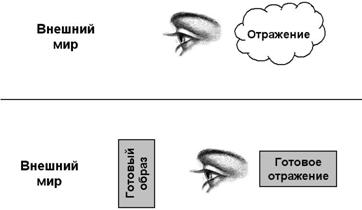

|
На главную
Глава
9. Управление сознанием
Мы
рассмотрели насилие над человеком через товары и деньги. Теперь
заглянем в самые заповедные места чахнущего над златом Кощея,
в глубинные тайны дьявола – в управление сознанием человека.
Школьная физика – очень простая
наука. Но у человека, не знающего, что такое электричество, молния
вызывает суеверный страх.
Управление сознанием – тоже
очень простая наука. Но для человека, знающего только физику,
она лежит в области суеверий.
Бессмысленно бороться с молнией
с помощью молитвы. Но также бессмысленно бороться с управлением
сознанием с помощью материальных предметов. Долой материалистические
предрассудки.
Управление точками привязки
I.
Религиозное управление сознанием
Общества занимаются управлением
индивидуальным и общественным сознанием с момента своего возникновения.
Религия – это основная форма существования общественного сознания.
Без общей религии, без общих точек привязки не может существовать
ни одно общество. Без них люди просто не смогут взаимодействовать
друг с другом, их сознание разбежится в разных направлениях.
Изначально людей и их сознание
заставляла объединяться борьба с природными условиями, конкуренция
с животными и зверьми. Затем росту религий способствовала борьба
между обществами. Чем больше по размеру было общество и его религия,
тем выше был их шанс выжить в конкурентной борьбе.
Обычно вера людей в выбранных
ими богов или идолов настолько сильна и непоколебима, что они
считают свою религию не религией, но единственно возможным представлением
о мире. Чем дольше существует религия, тем меньше сомнений в существовании
своего бога или идола, и тем сильнее сторонники этой веры в борьбе
с другими религиями. Сомневающиеся проигрывают.
Но чем крепче вера, тем уязвимее
религия, поскольку люди перестают смотреть на неё со стороны,
перестают смотреть на религию как на средство самоорганизации,
которым они могут и должны управлять. Религия начинает управлять
ими. Чем более развита религия, тем тяжелее управлять этой религией
– как в силу всеобщего подчинения ей и нахождения внутри её, так
и в силу сложности управления сложной системой.
Тяжелее всего в такой ситуации
материалистическим обществам, которые в принципе отрицают свою
религиозность. Они заведомо отдаются на волю случая, на волю неуправляемого
развития тех процессов, которые идут внутри их религии. Или они
становятся хорошей мишенью для враждебных соседей. Наложив табу
на понятия веры и субъективности, материалистические общества
никогда не могут понять сами себя.
Если соседнее общество поставит
своей целью управление религией другого общества, то оно может
достигнуть немалого успеха, поскольку все недостатки чужого общества
становятся преимуществами для общества-конкурента: оно относится
к чужой вере просто как к вере, а не как к реальности; оно наблюдает
за процессами со стороны, а не изнутри; его целью является не
совершенствование, а разрушение сложной системы.
Управление внутренним миром человека
Мы обсудили концепцию точек
привязки сознания человека к материи и к другим сознаниям во 2-й
главе. Возможно, читатель захочет перечитать 2-ю главу, прежде
чем мы перейдём к дальнейшему рассмотрению.
Управление внутренним миром
человека, его сознанием осуществляется через управление точками
привязки сознания.
Подобно тому, как информация,
проходящая через компьютер, меняет состояние ячеек памяти компьютера,
любая информация, проходящая через сознание, меняет заряды точек
привязки.
Анализируя информацию, проходящую
через сознание, можно понять, как изменяются точки привязки. Если
эта информация появляется не сама по себе, а кем-то сознательно
создаётся или направляется, то, анализируя информацию, можно понять,
кто и в каком направлении пытается изменить сознание.
Простейшим примером управления
сознанием являются воспитание и обучение. В принципе, воспитание
использует те же способы, что и насилие над сознанием (отдавая
или не отдавая себе в этом отчёт). Поэтому методы, которые мы
опишем, могут быть применены как во вред человеку, так и для его
пользы.
*
* *
Один из базовых инстинктов человека
– самозащита сознания. Человеку свойственно сопротивляться внешнему
воздействию, подвергать сомнению любые изменения, которые пытаются
внедрить в его сознание.
Подводный камень здесь в том,
что обычно человек начинает отрицать и сопротивляться открытому
изменению, но не замечает скрытого, косвенного изменения.
Те, кто владеет способами косвенного
управления сознанием, всячески поощряют негативное отношение к
открытому воспитанию, ибо это даёт им ещё большую власть над людьми.
Иногда скрытое изменение называют
манипуляцией сознанием, но мы не будем использовать этот термин.
Мы разделяем управление сознанием на такое, которое осуществляется
с желанием сделать добро управляемому и такое, которое делается
с сознательным желанием причинить вред управляемому, то есть насилие.
В первом случае возможны два варианта – желание
сделать добро приносит добро, или желание сделать добро причиняет
вред. Скрытое управление сознанием можно и иногда нужно осуществлять
во благо управляемого.
Во втором случае мы рассмотрим,
как управляемый может защититься от насилия и обратить вредное
воздействие в свою пользу, направить его против насильника.
Читатель может спросить – почему,
так раскритиковав цифровые модели в предыдущих главах, мы сами
занимаемся оцифровкой сознания, говоря о точках привязки и их
зарядах? Цифры – это идеальный инструмент для защиты и контратаки.
Но, конечно, не стоит развивать сознание с помощью одних цифр.
*
* *
В философии, социологии и других
логиях есть много понятий, так или иначе пересекающихся с темой
нашего обсуждения. Мы намеренно выбираем самую простую, самую
логичную модель. Мы стремимся к тому, чтобы её мог легко понять,
запомнить и применять любой человек в ежедневной практике.
Для того чтобы метко стрелять из автомата Калашникова,
совершенно необязательно знать законы термодинамики или сопротивления
материалов. Для того чтобы отстреливать чужие точки привязки,
необязательно углубляться в философию и психологию.
С другой стороны, мы не будем
рассматривать такие методы управления сознанием как гипноз или
нейролингвистическое программирование (НЛП), поскольку они носят
индивидуальный характер, и их сложно применить для воздействия
на население целой страны.
Из чего же, из чего же, из чего же...
Как мы помним, точки привязки
– это любые отражения, зафиксированные в сознании человека: конкретные
и абстрактные; изображения, звуки, образы, любые ощущения.
Вспомните детскую песенку «Из
чего же, из чего же, из чего же сделаны наши мальчишки? Из чего
же, из чего же, из чего же сделаны наши девчонки?»
Это песенка об индивидуальных
точках привязки.
Вспомните песню «С чего начинается
Родина».
Это песня о системообразующих
точках привязки общества.
Посмотрите на окружающие нас ежедневные примеры
того, как различные общества и под-общества удерживают сознание
своих членов в нужных точках привязки.
Церковь делает это через нательный крест, молитвы
перед принятием пищи и на ночь, иконы в доме, здания церквей на
улицах и кресты на куполах, воскресные приходы в церковь, исповеди,
религиозные праздники и крёстные ходы. Чем жёстче религия, тем
жёстче она относится к этим ритуалам привязки сознания. Ислам
требует от своих приверженцев пятикратной молитвы в строго определённое
время.
Другим хорошим примером удержания
сознания в заданных точках привязки является армия. Она доводит
до автоматизма подчинение установленному набору команд, заставляет
вести жизнь по строго уставу, воспитывает святое отношение к боевому
знамени, военной присяге, знакам воинского отличия и наградам.
Да, скажет читатель, но мы-то
живём не в религиозном, а в светском государстве, молитвами и
уставами не связаны. И многие из нас денежному богу, банкам и
счётным книгам тоже не молятся.
Верно, но где проводит немалую
часть времени наш уважаемый читатель? Наше утро начинается с телевизора;
после работы мы торопимся домой, чтобы успеть на фильм, сериал
или на спортивный матч. На следующий день мы обсуждаем с сослуживцами
и родственниками новости, увиденные по телевизору; обсуждаем жизнь
привычных «героев» телеэкрана. Нередко весь день современного
человека, и особенно ребёнка, строится вокруг программы телепередач.
Как мы увидим, этот ящик гораздо
сильнее управляет нашим сознанием, чем это можно представить.
Анализируйте
не высказывания философов и не древние книжки, но живое сознание
общества. Это сознание – критерий истины. Смотрите, какая
информация проходит через него, какая преобладает, какая закрепляется.
Из чего были сделаны мальчишки
и девчонки двадцать лет назад, и из чего сделано «поколение
Пепси»?
II.
Контролируемые и неконтролируемые точки привязки
Управление
сознанием человека, сводится к контролированию точек привязки
его сознания.
С
точки зрения управляющего, надо добиться, чтобы каждая конкретная
точка привязки и все вместе точки привязки были под контролем
управляющего.
Соответственно,
цель состоит в том, чтобы в сознании все неконтролируемые
точки были вытеснены и заменены контролируемыми.
Тогда, если управляющий хочет причинить насилие,
он сможет словно дёргать за точки привязки в голове человека,
и превратить его в свою марионетку, не вызывая сопротивления.
Управление во благо человека
не предполагает полного контроля над его сознанием, но наоборот,
развитие его способностей самостоятельно создавать точки привязки
и освобождаться от контролируемых извне.
*
* *
На уровне массового сознания за точки привязки
основную ведут борьбу корпорации. Они стремятся накрепко и навечно привязать сознание
к товарам и услугам, выпускаемым этим корпорациями, а также к
своим торговым маркам (брэндам). Контролируя брэнд, яркую точку
привязки, доминирующую в сознании, человека можно заставлять делать
всё, что угодно.
Привязка сознания к товарам
и к деньгам входит в прямое противоречие с привязкой к людям,
в первую очередь к семье. Привязка к товарам разрушает семью.
И наоборот, люди из разрушенных семей легко привязываются к товарам,
деньгам и брэндам.
На уровне стран метрополии
постоянно пытаются вытеснить из сознания людей в колониях все
местные, национальные точки привязки. Заменить их теми, которые
контролируются метрополиями – техническими новинками, импортными
товарами, развлечениями, символами сладкой жизни. Метрополии крайне
незаинтересованы в том, чтобы в сознании жили национальные герои,
национальные праздники или местная природа, которые не подвластны
чужеземцам.
На уровне религий христианство
объявляло всё, что окружает человека, созданным богом, подвластным
воле божьей и подвластным воле церкви как представителя бога на
земле. Христианство (с доброй или иной целью) пыталось контролировать
все точки привязки человека деревни.
Религия денег перехватила контроль
над большинством повседневных точек привязки, заявив, что в основе
мира лежат цифры, и всем управляет математика. Затем она вытеснила
человека из природного мира, при жизни в котором остаются серьёзные
сомнения в математичности происхождения всего живого. В городе
уже нет сомнения в том, что корпорации и деньги создали заводы,
магазины и дома и управляют ими, а однообразный серый город действительно
создан математическими методами.
Социализм в начале своего развития
перехватил управление созданными религией денег точками привязки.
Он заявил, что рабочие создают своим трудом все фабрики и заводы,
и потому они безраздельно принадлежат именно рабочим, а не эксплуататорам-капиталистам.
Затем социализм построил множество новых городов, фабрик и заводов,
уже по праву став их создателем.
На закате своего существования
Коммунистическая партия Советского Союза стала считать, что производство
товаров должно управляться «экономически». Этим партия сама признала
власть рынка, денег, золота и твёрдой валюты. Признав власть идола
религии денег над основными точками привязки сознания советского
общества, она просто не оставила в нём места для своей власти
и для власти рабочих, кроме власти над воспоминаниями.
Управление познанием и общением
Все процессы работы сознания
человека можно условно свести к двум процессам – познание
природы и общества и общение с другими людьми.
Контроль над этими двумя процессами
и даст полный контроль над сознанием человека. Он должен осуществляться
параллельно, поскольку общение непосредственно влияет на познание
и наоборот.
Сознание любого человека ограничено,
а мир – безграничен. Поэтому сознание может отразить только его
небольшую часть.
Для
управления процессом познания надо управлять тем, куда
смотрит человек, как смотрит человек, и что видит человек.
Нет необходимости менять весь
мир. Надо заставить смотреть человека только в определённую сторону,
определёнными глазами, замечать только части того, на что он смотрит,
или надо повлиять на готовую картину в его сознании.
Для
управления процессом общения надо контролировать,
с кем общается человек, как, через какие общие точки
привязки идёт общение и что видит человек в собеседнике.
Надо ограничить круг общения
человека, контролировать темы и предметы, вокруг которых ведётся
общение, и контролировать мнение человека об окружающих.
Отсечение человека от реального
мира, изоляция его от других людей, привязка его сознания к специфическому
набору точек привязки, предметов и символов, применяется всеми
религиозными сектами и культами. Религия денег отличается от них
только масштабами своего распространения.
Управление отражением
Но наиболее эффективный способ
контроля сознания человека – это прямое управление отражением.
Можно не дать мозгу возможность самому формировать
отражение, надо дать ему готовое отражение. Можно дать
ему как готовое отражение материи, так и готовое отражение других
людей.

Сверху
– самостоятельное формирование
отражения.
Снизу
– замена внешнего мира готовым образом.
Создание отражения требует от
мозга умственного труда. Если приучить мозг к потреблению, а не
созданию, то он с удовольствием будет пользоваться готовыми образами.
Чем сильнее удастся отсечь человека
от внешнего мира, тем эффективнее будет контроль отражения. Чем
уже канал между реальным миром и человеком, тем сильнее
человек отсечён от реального мира. Если этот канал сводится к
телевизору или к компьютеру, достаточно управлять только этим
каналом, и можно полностью управлять человеком.
*
* *
Рассмотрим три этапа управления
отражением.
Первый
шаг – управление отражением через изменение внешней формы предмета
без изменения содержания; придание объекту нового вида, изменение
его оболочки.
Очевидными примерами будут фрукты
и овощи, полные ядов, пестицидов и химикатов, но внешне идеальные,
без червей и без изъянов; искусственные продукты, пищевые красители,
химически созданные запахи и вкусовые добавки.
В общении это натянутые улыбки
ровных вставных зубов, которые скрывают внутреннее насилие. Недаром
в наши дни создание «имиджа» (в переводе с английского – образ,
отражение), стало главной целью человека поганого общества.
Второй
шаг – отсечение, изолирование самого предмета через использование
яркой упаковки. Она скрывает от человека вид настоящего предмета,
заменяет его яркой картинкой, которая обычно имеет очень мало
общего с самим предметом.
Представьте, что со всех западных товаров сняли
бы упаковки, и товары выложили бы на полках супермаркетов в настоящем
виде. Сереалы и мюсли стали бы обычной крупой, мало
чем отличающейся друг от друга. Почти все конфеты, чипсы, соусы
выглядели бы одинаково. Особенно отвратительно выглядели бы замороженные
полуготовые продукты и сухие супы.
Снимите этикетки с духов, вин,
пива, сигарет, коки, пепси, шампуней, кремов, косметики, таблеток
для похудения, собачьих кормов и жвачек. Разлейте их в одинаковые
прозрачные бутылки или разложите в одинаковые коробки. Товары
от этого не изменятся, но захочется ли вам после этого их купить?
С другой стороны, нужны ли этикетки ягодам в лесу, овощам на грядке
или фруктам в саду, чтобы вызвать у вас аппетит?
Третий
шаг – полное изъятие предмета и замена его отражением. Основным
источником знаний о происходящем в мире для современного человека
является телевизор. Телевизионная картинка – готовый образ, который
напрямую загружается в мозг и не требует воображения, анализа
или обдумывания. Управляемый жрецами религии денег телевизор стал
посредником между человеком и остальным миром, стал каналом, который
связывает человека с материей и с другими людьми.
Заметим, что телевизор управляет
тем, куда смотрят наши глаза – только туда, куда смотрит
камера. Он управляет тем, как смотрят наши глаза – так
как этого хотят режиссёр и ведущий, и тем, что они видят
– через монтаж и компьютерные эффекты можно полностью заменить
картинку.
Стеклянный ящик размером 30 на 40 сантиметров стал миром современного человека.
Управление отражением группы людей
Рассмотрим особенности управления
отражением группы людей.
Адвокат в суде управляет тем,
какое отражение преступления сложится в сознании судьи и присяжных.
Заметим, что его интересует не реальная картина преступления,
а именно то коллективное отражение, которое будет получено.
Адвоката интересует отражение в ограниченном
количестве сознаний – тех, кто прямо или косвенно имеет отношение
к судебному делу. Целью является такое построение, чтобы отсутствовали
противоречия между отражениями разных людей.
Чем больше создаваемое отражение,
чем больше людей в него вовлечено, тем сложнее
добиться непротиворечивости этого отражения в разных сознаниях.
Людям свойственно сверять свои отражения с другими, спрашивать
мнения других людей; соседние сознания являются для них критерием
истины. Чем меньше и изолированнее группа людей, тем проще поддержать
непротиворечивость отражений, созданных в их сознаниях. Такое
замкнутое групповое отражение можно назвать мифом или культом.
Поэтому управляющие сознанием
объективно заинтересованы в уничтожении способности людей общаться
напрямую. Желательно создать ситуацию, когда общаются только люди
с похожими «картинами мира», например, все обладатели определённой
марки одежды или мотоцикла. Во-первых, это усилит их представления,
во-вторых, ещё сильнее привяжет их к товару, поскольку от обладания
им будет зависеть допуск в группу общения.
*
* *
С другой стороны, чем большему
числу людей удастся внедрить одно и то же отражение, тем сильнее
оно будет похоже на правду.
Отражением товара в сознании
покупателя управляет продавец, пытаясь максимально усилить и приукрасить
его. Если продавцу удалось продать товар втридорога, то противоречие
в сознании покупателя возникнет только в том случае, если об этом
узнает кто-то третий, в чьём сознании этот же товар будет иметь
гораздо меньшую стоимость.
Наоборот, если этот третий подтвердит
высокую цену, противоречия не возникнет и все будут «счастливы».
Продолжая эту последовательность, если большинство людей, которые
встретятся покупателю, подтвердят эту высокую цену, то эта цена
будет восприниматься как правильная. Если все люди на земле поверят
в эту цену, то она станет непреложной истиной.
Поэтому говорят, что создать
большую ложь проще, чем маленькую. Чем больше людей одновременно
поверят в неё, тем больше будет подтверждения истинности этой
лжи.
*
* *
Приведём некоторые другие примеры
управления отражением в ежедневной жизни.
Отражением профессора управляет
студент на экзамене, создавая у профессора отражение картины знаний
в своей голове. Если канал между ними сводится к компьютерному
тесту, то и полнота этой картины будет весьма ограниченной.
Актёры, создавая образы других
людей, управляют отражением зрителей (актёры делают это открыто,
не скрывая, что зрители присутствуют на спектакле). Отсюда и пошло
выражение, что наша жизнь – театр.
Корпорация управляет своим отражением
в сознании инвесторов через квартальные и годичные отчёты.
*
* *
Говоря о религии денег, она
стремится свести познание к оцифровке природы и общества и выражению
их в своём идоле – денежном эквиваленте. Она обращает внимание
человека только на то в мире, что может стать товаром и может
быть использовано для получения прибыли.
В контроле общения религия денег стремится
запретить всякое прямое общение людей, но разрешить только общение
посредством товаров и денег. Также она навязывает неравенство
в общении, ставит его в зависимость от места в иерархии, статуса
в обществе. Будь то отношения на работе, в семье, во время отдыха
или в обычной жизни.
Религия денег стремится свести
общение к общению с полностью контролируемыми ей «знаменитостями»:
к общению не с живыми людьми, а с виртуальными теле- кино-персонажами
и с газетными и журнальными фотографиями.
Вся сама религия денег, все
её сказки о свободе, рынке и демократии – это не более чем управление
отражением.
III.
Управление прошлым, настоящим и будущим
Для эффективного управления
сознанием надо получить управление над точками привязки:
§
прошлого (управление историей),
§
настоящего,
§
будущего (управление желаниями).
*
* *
Для управление прошлым,
у человека не должно быть воспоминаний, которые бы не контролировались
бы управляющим.
На уровне человек – корпорация, все
воспоминания должны сводиться к обладанию теми или иными товарами,
но не к памяти об отношениях с людьми и в семье. Люди должны восприниматься
только в связи с товарами (а не товары в связи с людьми). Яркие
события в жизни должны быть связаны с брэндами. Праздники – это
покупка и получение в подарок товаров. Исторические даты должны
быть представлены как даты выпуска тех или иных товаров (например,
первого автомобиля серии, кинофильма, рок-альбома, спортивного
события, рождения знаменитости) или изобретения тех или иных технологий, которыми
владеет корпорация.
На уровне метрополия – колония,
в идеальном случае история должна перестать существовать вообще,
ибо она представляет потенциальный источник противоречий с образом
метрополии, создаваемым в сознании колонии. История самой колонии
должна быть окрашена в негативные цвета (отрицательно заряжена),
чтобы у жителей она в принципе вызывала неприязнь, и не было желания
её изучать. Образ метрополии должен быть идеален и ярок.
На уровне борьбы религий,
история конкурирующей религии должна быть переписана в чёрных
тонах и представлена как отсутствие культуры и цивилизации. Из
истории должны быть убраны упоминания о событиях и личностях,
связанных с другой религией. Наоборот, память об известных открытиях,
событиях и деятелях господствующей религии должна активно поддерживаться.
Особенностью религии денег является
то, что она в принципе не любит историю, опять-таки в силу того,
что любая история потенциально ограничивает дёргание за точки
привязки сознания ради нужд сегодняшнего дня.
*
* *
Управление настоящим
мы уже описали выше. Ещё раз подчеркнём, что все точки привязки
сознания должны быть заменены контролируемыми.
Почему, например, в современной
Орде почти не известны классические книги Жюля Верна, Фенимора
Купера или Марка Твена, хотя это история самой Орды?
Почему они заменяются убогими
чтивами вроде Гарри Поттера и Бэтмена? Почему по Гарри Поттеру
снимаются многомиллионные фильмы, и выпускается масса товаров
с его символикой?
Почему в магазинах можно найти
какую-то книгу-поделку современного «писателя», представляющую
собой компиляцию Робинзона Крузо, Капитана Немо и Гулливера, но
нельзя найти оригинальных книг?
Ответ прост – персонажи классических
книг являются сильными точками привязки, но они не защищены авторскими
правами, соответственно корпорации не могут контролировать их.
Поэтому они вышибают их из сознания полностью подконтрольным Гарри
Поттером. Другая причина в том, что классические персонажи ещё
и ведут себя не по правилам религии денег.
Управление желаниями
Рассмотрим управление точками
привязки будущего – желаниями.
Природа человека такова, что
правильное управление желаниями гораздо важнее, чем управление
прошлым или настоящим. Ради будущего человек готов жертвовать
настоящим, и тем более прошлым. Удовольствие человеку доставляет
процесс достижения определённой цели, процесс выполнения определённого
желания. Поэтому полного управления человеком можно добиться только
за счёт задания его целей.
Мы можем рассматривать желания
как точки привязки с очень высоким зарядом, обладания которыми
хочет добиться человек. В традиционных религиях понятия цели жизни
и счастья – очень сложные и многосторонние. В религии денег всё
просто – это захват товаров и денег в частную собственность.
Немало поганых ставит своей
целью просто накопить определённую сумму на банковском счету –
«сделать» миллион, два, десять. Заметим, насколько это в чистом
виде религиозное удовольствие – человек просто думает, что его
имени соответствует некая циферка в компьютере, и одна эта «мысль»
доставляет ему счастье и составляет цель его жизни.
*
* *
По сравнению с другими обществами,
религия денег немало преуспела в задании желаний и создала целые
«отрасли» по производству желаний – рекламу, маркетинг,
пи-ар.
Весь ежедневный язык поганых
перестроился с языка отдания указаний, высказывания пожеланий
или советов, на язык управления желаниями.
Обычный человек говорит: «Вам
надо приходить на работу к 9 утра; для этого компьютера надо купить
новый монитор; вам надо быть более активным».
То же самое поганый произнесёт
так: «Вы хотите приходить на работу к 9 утра; вы хотите купить
новый монитор для компьютера; вы хотите быть более активным».
Сравните два утверждения:
«Ты
должен любить свою Родину».
«Я
хочу любить свою Родину».
Если их будут периодически повторять
люди с экрана телевизора, то какое выражение вам больше понравится,
и какое произведёт больший эффект?
Появился даже специальный термин
– «объект желания». В рекламе постоянно используется задание обладания
объектом желания как мечты человека. Этот автомобиль – твоя мечта,
это украшение – объект твоего желания.
*
* *
Отметим, что, с точки зрения
управляющего, желания могут быть как выполнимыми, так и заведомо
невыполнимыми.
На уровне человек – корпорация,
как только покупатель достигает цели – приобретает товар – ему
тут же устанавливается новая точка привязки, новая цель. Следующий
класс автомобиля, следующая в «линейке» модель компьютера или
более массивный дом, более крупный драгоценный камень. Главное
– чтобы сознание оставалось привязанным к автомобилям, компьютерам
или драгоценностям, чтобы желания не выходили за рамки прилавка.
На языке позапрошлого века истинная
речь корпорации звучала бы как: «Не сметь покупать товары в соседней
лавке! Не сметь думать ни о чём, кроме моих товаров!».
На языке управления желаниями
эта же речь звучит примерно так: «Ты хочешь мои товары. Ты хочешь
думать только о моих товарах. Ты хочешь покупать только мои товары.
Только мои товары приносят тебе удовольствие, престиж и власть».
На уровне метрополия – колония,
метрополии должны задавать все желания в колониях, быть раем,
идеальным обществом, к которому захотят стремиться колонии.
Пока метрополии задают желания
в колониях, задают образцы для подражания, колониям невозможно
догнать их в принципе. Если только колония приблизится к контролю
над ключевой точкой привязки, то будет заменена эта точка, заменена
цель, заменено само понятие того, что является идеалом на данный
момент. Слабым странам невозможно «догнать и перегнать» метрополии.
Они могут выиграть, только если они сами начнут задавать себе
цели.
Самым худшим видом управления
является тот, который задаёт заведомо невыполнимые желания, но
сам не осознаёт этого. Рано или поздно управляемый отчается, и
тогда он просто перестанет подчиняться управляющему вообще. Уж
лучше вообще не задавать желания, чем ставить невыполнимые.
*
* *
В управлении желаниями очень
важно управлять общением. Как мы уже отмечали, средний человек
хочет быть «как все», он хочет того же, чего хотят все.
Каналы доступа к сознанию
Для управления отражением необходимы
каналы доступа к сознанию. Можно выделить два уровня каналов –
каналы доступа на уровне человека (зрительное изображение, звук,
осязание, обоняние, абстрактное мышление и так далее) и каналы
информационного доступа к массовому сознанию.
Напомним список каналов доступа
к массовому сознанию, который мы привели в предыдущей главе:
§
разговорный язык
§
телепередачи
§
радиопередачи
§
газеты и журналы
§
кинофильмы и видеофильмы
§
компакт-диски и аудиокассеты
§
компьютерные игры
§
веб-сайты
§
концерты и представления
§
книги
§
занятия в ВУЗах
§
занятия в школах
§
экскурсии
§
церковные службы
§
хождение по магазинам и офисам
На уровне чувств управление
массовым сознанием сводится к работе с неподвижным и подвижным
изображением, текстами и звуком. Запахи частично применяются в
газетах и журналах и розничной торговле.
*
* *
Как мы уже отмечали, основным каналом доступа
является телевидение. В среднем американском доме есть 3 телевизора.
Дети и подростки смотрят телевизор 3.5 часа в день. Средний взрослый
американец смотрит телевизор 5 часов в день. Если откинуть время
сна и 8-часового рабочего дня плюс время на дорогу, то он проводит
у телевизора практически всё свободное время.
Интересно, что по-английски
телепередачи так и называются – programming, то есть программирование
[сознания].
Привязка человека к телевизору
гораздо сильнее в городе, чем в деревне. Особенностью города,
по сравнению с живой природой, с лесом, полем, огородом, домашними
животными, является его мёртвое однообразие. В городе сознанию
человека становится нечего отражать, ибо оно каждый день сталкивается
с неизменяющейся материей, для которой уже давно созданы отражения.
Городской человек гонится за новыми товарами просто для того,
чтобы у него появились хоть какие-то новые впечатления, чтобы
нарушить монотонность своей жизни.
Поэтому в условиях города телевизор
становится чуть ли не единственной постоянно меняющейся частью
мира. Но телевизор предлагает мозгу готовые образы, готовые отражения.
Религия денег управляет отражением, пытаясь
монополизировать всё, что изменяется вокруг человека. Она сознательно
уничтожает или удаляет из окружения человека живое, чтобы или
продать человеку изменения (цветы в магазине, новый вид витрины, новую упаковку), или продать
и вставить ему готовый образ.
*
* *
Надо чётко представлять, что
с точки зрения бизнеса, основная функция любого из каналов СМИ
– это не новости, не информация и не художественные достоинства.
Это контроль сознания человека.
Стоимость (valuation)
многих Интернет-компаний прямо оценивается по числу «eyeballs»,
«глазных яблок», которые прикованы к сайтам этой компании, то
есть по количеству сознаний, которые она контролирует.
Рейтинг теле- и радиопередач,
а соответственно и стоимость рекламы в них, тоже напрямую оценивается
по числу зрителей, которые смотрят или слушают ту или иную передачу.
В глянцевых журналах стоимость рекламы, которая является главным
источником их доходов, определяется количеством читателей.
Концентрации капитала соответствует
концентрация собственности на каналы управления сознанием. 100
крупнейших корпораций США покупают 75 процентов рекламного времени
на коммерческом телевидении и 50 процентов на общественном ТВ.
В Америке очень много телевизионных каналов,
широковещательных, спутниковых, кабельных, местных и общих. Но
каналы, которые смотрят 2/3 всех телезрителей, контролируются
шестью крупнейшими компаниями. Шесть человек могут единолично, и никому не отчитываясь,
решать, что показать, и что не показывать двумстам миллионам.
*
* *
На уровне колоний, метрополиям крайне
нежелательно, чтобы в колониях сохранялись свои национальные каналы
доступа к сознанию, точно так же, как им не нужна развитая национальная
промышленность. Метрополии пытаются полностью вытеснить местное
кино, телепередачи, музыку, содержание газет и журналов (естественно,
под видом экономической нецелесообразности).
Откройте популярные в России
глянцевые журналы и подсчитайте, сколько статей посвящено западным
темам и знаменитостям (или подражанию им), а сколько посвящено
русским. Просмотрите обычную программу телепередач и подсчитайте,
сколько в ней импортных передач или сделанных по американским
шаблонам. Подсчитайте, какой процент отечественных фильмов идёт
в кинотеатрах.
С другой стороны, по американскому телевидению
не показывают ни одного мультфильма, телепередачи или репортажа, созданных где-либо,
кроме США и Великобритании. Изредка показывают иностранные фильмы,
но их даже не дублируют, ограничиваясь субтитрами.
Тот же подход применяется к
историческим памятникам и музеям. Правительства колоний находятся
под постоянным нажимом с целью закрытия музеев и сокращения расходов
на них как «экономически» неоправданных. Наоборот, каждый пивной
бар в метрополии приобретает историческое значение.
Рассматривая другие каналы доступа,
надо отметить, что корпорации и метрополии пытаются активно войти
во все каналы и внедрить через них свои точки привязки.
Операции с точками привязки
I.
Исходный и желаемый набор точек привязки
Теперь обсудим подробнее, как
именно осуществляется перепрограммирование сознания человека.
Мы немного поиграем в дьявола. К сожалению, методы насилия над
сознанием применяются так часто и так массово, что единственный
способ борьбы с ними – научить каждого этим методам и защите от
них.
Представим, что перед нами человек,
сознание которого мы хотим изменить. Для начала надо определить
нынешнее состояние его сознания, его исходный набор точек привязки.
Надо определить, к каким точкам
сейчас привязано его сознание, и каковы заряды этих точек. Следует
также отметить те точки, которые контролируются управляющим в
данный момент, и те, которые не контролируются.
Иными словами, нам надо составить «карту» его
сознания, или определить то множество точек, над которыми
мы будем проводить операции.
Далее, нам надо составить желаемый,
конечный набор точек привязки. Если мы хотим управлять человеком,
то надо заменить все неконтролируемые точки контролируемыми. Кроме
того, надо поменять заряды всех точек соответственно нашему желанию.
*
* *
Для примера приведём фрагмент
исходного набора точек привязки советского человека 1985 года:
«Родина, партия, город, завод, семья, дача, соседи, книги...»
Фрагмент нового желаемого набора:
«Деньги, доллар, банк, фирма, секс, стиль, авто, статус...»
Исторически на Западе кальвинизм
и прочие протестантские течения как раз и выполнили функцию переходных
мостиков для сознания между точками привязки христианства и точками
привязки религии денег. Сначала богу постепенно были преданы черты
денег, после чего замена бога на идола не составила труда. Подробно
процесс изменения сознания протестанта описал Макс Вебер в работе
«Протестантская этика и "дух капитализма"».
*
* *
Наибольшее значение имеют оперативные
точки привязки сознания. Сознание любого человека ограничено,
поэтому он может оперировать конечным числом понятий, обычно не
более полутора десятков.
Если добиться контроля над состоянием
не всего сознания, а только его оперативной части, если удерживать
в оперативной зоне контролируемые точки привязки, то этого будет
в целом достаточно для управления всем человеком.
Те точки, которые долго не появляются
в оперативной зоне, постепенно забываются и перестают иметь значение.
*
* *
Для
массового управления сознанием важны следующие типы точек
привязки (поскольку именно эти типы передаются каналами массового
доступа к сознанию):
§
изображения
конкретные
(фотографии, рисунки, движущиеся картинки)
абстрактные
(символы, логотипы, схемы)
§
звуки
мелодии,
напевы, звуки слов
§
слова
язык,
лексикон
*
* *
Действия с наборами точек привязки
можно свести к трём базовым операциям:
§
введение новой точки
привязки,
§
удаление существующей
точки привязки
§
смена заряда точки
привязки.
Введение точки привязки
Первая операция – введение новой
точки привязки в оперативную зону сознания.
Что для этого надо? Чтобы изображение
постоянно попадалось человеку перед глазами, звуки постоянно достигали
его ушей, и чтобы он постоянно сталкивался с употреблением слов,
которые мы хотим ввести в его оперативное сознание.
Если ребёнка учат, например,
литературе, то эту роль выполняет учебник, учитель, домашние задания.
«Повторение – мать учения».
Обучение, как правило, это открытый
процесс. Точку привязки можно ввести и скрыто, просто предъявляя
её много раз человеку «невзначай». Можно показать брэнд фирмы
в рекламе по телевизору, в журнале, на рекламном щите на улице,
упоминать его в новостях, и так далее. Главное – ввести его в
сознание человека.
*
* *
На введение новых точек привязки
будут влиять частота, продолжительность и очерёдность
их упоминания.
Например, если каждую программу
новостей начинать с курса доллара, это будет более сильным введением,
чем упоминание курса в конце программы или не во всех новостях.
*
* *
На силу введения влияет заряд
точки в пространстве – важность, значительность и во времени
– срочность.
Информация, преподносимая как
важная и срочная, всегда сильнее вписывается в сознание, чем второстепенная
и заурядная.
*
* *
Следующий фактор – это фон,
на котором вводится точка привязки. Где легче поставить яркую
точку – на сером листе бумаги или в пёстром лесу? Где легче поставить
точку – в пустоте или среди множества других точек?
Чем более примитивен и узок
мир человека в целом, тем проще внедрить в него контролируемые
точки привязки. Поэтому управляющий объективно заинтересован,
чтобы подавить или удалить все остальные яркие точки, опустошить
и осерить мир человека.
Рекламный ролик по телевизору
– очень яркое пятно в городе. Поместите этот же телевизор среди
цветущего леса, и эта реклама едва ли вообще обратит на себя внимание.
Кого привлекут духи в лесу или
в ромашковом поле, кто станет покупать таблетки витаминов в деревне?
Удаление точки привязки
Вторая операция – удаление существующей
точки привязки из оперативной зоны и, затем, из сознания вообще.
В идеале удалению подлежат все неконтролируемые точки привязки.
Можно выделить пять основных
способа удаления:
1.
Изъятие из внешнего мира.
2.
Замена аналогичной контролируемой точкой.
3.
Дробление точки и удаление по частям.
4.
Удаление фоном.
5.
Замыкание точек с противоположными зарядами.
*
* *
Самый простой способ – «с глаз
долой – из сердца вон». Надо изъять из окружения человека
всякие упоминания об уничтожаемой точке привязки.
Из жизни лечащегося от алкоголя
уберите всё, что связано с бутылкой. Самоубийце не должна попадаться
на глаза верёвка. Из книг и учебников вырежьте фотографии врагов
народа.
*
* *
Второй способ – замена аналогичной
точкой. Очень важно, чтобы место удаляемой точки не пустовало,
а было заменено новой, контролируемой.
Снимите старые символы, нарисуйте
новый логотип, замените герб страны брэндом пепси. Выключите старые
песни, поставьте новые, замените гимн рекламным припевом. Перестаньте
употреблять обычные слова, замените их вновь придуманными, замените
русские слова английскими, а ещё лучше матными. Снесите памятники,
вместо них поставьте рекламные щиты. Переименуйте улицы и города,
смените названия органов власти и названия предприятий. Смените
название страны – и вы получите совершенно новый мир, хотя с материалистической
точки зрения ничего не изменилось.
Удаление действует не на всех
одинаково. Часть людей будет продолжать помнить, поэтому важно
отсечь остальных от этой памяти. В этом случае религия денег занимается
расшатыванием сознания в целом. Она приучает к презрению
к старшим и ко всему «старому»; создаёт культ новизны. Всё, что
новое – лучше просто потому, что оно новое. Человек привыкает
к частой и автоматической замене точек привязки.
*
* *
Третий способ – дробление
целой большой точки на маленькие составляющие.
Чтобы уничтожить страну, её
надо разделить на куски. Таким же образом в сознании людей можно
заменить понятие страны понятиями отдельных республик и областей,
даже не проводя физического разделения. Люди перестанут считать
себя частью целого.
Понятие семьи сложно удалить
из сознания, но его легко разделить на понятие отдельных индивидуальных
«личностей», которых мало что будет связывать.
Этим же способом можно бороться
и со страхами. Один большой страх перед «мощью» Америки разделите
на много маленьких фобий и победите каждую по отдельности.
*
* *
Четвёртый способ – удаление
фоном. Как яркую точку сложно поставить на пёстром фоне,
точно так же яркую точку можно не удалять, а просто заглушить
пёстрым фоном. Окружите уничтожаемую точку яркими соседними, и
она забудется сама собой. Забейте новости о скандале Клинтона
новостями о войне в Югославии.
*
* *
Самый коварный способ удаления
– короткие замыкания в сознании. Допустим, у нас есть точка
привязки с высоким зарядом, которую не удаётся ни замолчать, ни
заменить новой. Тогда следует найти в сознании человека любую
другую точку с противоположным зарядом, и связать эти две точки,
замкнуть их.
В результате в сознании возникнут
такие искажения, что выключится весь блок, весь участок, в котором
расположено замыкание. Это не только удалит точку, но и опримитивит
сознание в целом, что сделает его более удобным для управления.
Самое высокозаряженное понятие
верующего – бог и его представитель на земле, святая церковь.
Закоротите его с самым негативным – муками ада. Получим рассказы
об инквизиции.
Один из самых больших грехов
христианства – растление малолетних. Замкните его с самыми большими
праведниками – священниками и кардиналами. Получим дело кардиналов
Бостона.
Самое высокое понятие в России
– Родина. Замкните его с понятием смерти. Получим «репрессии».
Возьмите идеал светлого будущего
– коммунизм, и закоротите его с чёрным обществом смерти – фашизмом.
Получим «красно-коричневых».
*
* *
Представьте, что поганый забрался
в наше общее сознание. Он ползает по нему, находит точки с высоким
и низким зарядом и закорачивает их. Ему абсолютно всё равно, какие
это точки, его цель – просто замкнуть, омертвить. Поганый сидит,
смотрит на искры, радуется, улюлюкает, слюной исходит. Ждёт, когда
ему удастся окончательно всё уничтожить.
Изменение заряда точки привязки
Напомним, что заряды точек привязки
в конечном счёте определяют, что такое хорошо и что такое плохо.
Выделим три основных способа
изменения заряда:
1.
Напрямую.
2.
Через органы чувств.
3.
Через связывание с другими точками привязки
*
* *
Самый простой способ – поменять
заряд напрямую.
Расхвалить или обругать, используя
прилагательные, ярлыки, клички. Сказать, что этот товар-брэнд
хороший или плохой, исключительный или заурядный, великолепный
или дефектный, чёрный или белый и так далее.
Даже такой простой способ эффективен
при многократном повторении, а также при воздействии на детей,
подростков и людей с нетвёрдым сознанием.
Но этот способ относительно
открыт, легко отслеживается и может быть заблокирован инстинктом
самозащиты сознания.
*
* *
Другой способ – задание зарядов
через органы чувств.
Например, задание отрицательного
заряда плохой оценки в школе через наказание
ремнём, или пожатие руки за успехи. На уровне общества это тюремные
наказания за преступления. Сюда же можно отнести наказание голодом
и холодом за неспособность заработать нужное количество долларов.
Этот способ весьма действенен,
но он тоже открыт, а потому вызывает сопротивление. К тому же
физическими действиями можно заставить человека работать ради
необходимого, но практически невозможно ради приобретения товаров
удовольствий.
*
* *
Третий, скрытый, самый распространённый
и эффективный способ – связывание точки с другими точками,
уже имеющими в данном сознании высокий заряд. Этот способ мы рассмотрим
ниже.
II.
Присоединение, ведение, изменение
Подробнее рассмотрим, как подойти
к комплексному проведению операций по введению, удалению и смене
заряда точек привязки.
Можно выделить три этапа:
1.
присоединение,
2.
ведение,
3.
изменение.
*
* *
На этапе присоединения
надо понять человека, группу людей или общество. Надо изучить
их исходный набор точек привязки: определить, какие точки находятся
в оперативном сознании и их заряды, а также наиболее сильные спящие
точки привязки.
Надо понять систему ценностей
людей, научиться говорить на их языке. Далее, надо определить
внешнее окружение человека или группы; определить, на какие каналы
доступа к сознанию они лучше всего реагируют, какие органы чувств
у них сильнее всего задействованы. Следует также понять степень
гибкости их сознания и уровень защитных механизмов.
На языке маркетинга это называется
исследованием рынка и целевой аудитории.
*
* *
На этапе ведения надо
завоевать доверие. Надо создать у людей впечатление, что вы понимаете
их, разделяете их взгляды, вам близки их ценности, у вас с ними
много общего. Затем надо развить их мысли, показать им, что вы
знаете как, или, по крайней мере, хотите достичь тех же целей,
что и они. Показать, что вы хотите помочь им.
Типичной ошибкой управляющего
является попытка ввести или аргументировать изменения, исходя
из своей логики, своих ценностей, а не из логики и ценностей управляемого.
С другой стороны, так обычно поступают те, кто хочет добра управляемому.
Насильник гораздо хитрее.
*
* *
На этапе изменения можно
проводить операции по введению, удалению или смене зарядов (при
этом опять отталкиваясь от исходного набора управляемого).
Подход присоединение–ведение–изменение
гораздо более эффективен, чем попытка заставить человека что-то
сделать силой, приказом или авторитетом.
Можно представить себе это так.
Вы хотите изменить направление движения автомобиля. Подход в лоб
– остановить его и приказать ехать в другую сторону. Скрытый подход
– подсесть в автомобиль, проехать вместе с водителем, постепенно
уговорить водителя, или самому сесть за руль и увести машину в
нужном направлении.
На уровне общества, в христианское
сознание новые ценности надо вводить через христианские ценности.
Например, через сочувствие, как нам продемонстрировал раввин Каплан
(см. 4-ю главу). В поганое сознание идеи вводятся только через
страх и жадность.
Алгоритм введения и изменения заряда точки привязки
Обобщая,
можно предложить следующий упрощённый алгоритм изменения сознания.
1.
Выберите точку привязки, которую вы хотите ввести или изменить
в заряде.
Обычно
это товар или брэнд.
2.
Перечислите точки привязки, которые имеют высокий заряд (как положительный,
так и отрицательный) в сознании управляемой группы людей.
Самый
простой подход – отталкиваться от тех точек привязки, которые
заданы человеку природой на уровне инстинктов и универсальны для
всех людей.
Это
жажда, голод, чувство безопасности, половое влечение, красота
тела, вид неба, моря, солнца, растений и животных, вид детей.
В
религии денег нет необходимости особо исследовать – сознание групп
потребителей уже обработано и выставлено на продажу. В него заранее
внедрены высокозаряженные точки привязки, которыми вы можете,
за плату, воспользоваться. Это знаменитости; «раскрученные» брэнды,
а также «раскрученные» фобии.
3.
Определите ту исходную точку привязки, с которой вы будете связывать
вводимую точку привязки.
Желательно,
чтобы исходная связываемая точка привязки имела хоть какую-то
логическую или ассоциативную связь с вводимой. Для выбора этой
исходной точки можно просто порассуждать; воспользоваться словарями
или специальными компьютерными программами. Можно просто задать поиск вводимого слова на Интернет
и посмотреть, в каком контексте оно встречается.
Если
нет подходящих оперативных точек привязки, можно воспользоваться
одной из высокозаряженных спящих точек, но предварительно потребуется
её «размораживание», ввод в оперативную зону.
4.
Определите, как будут связываться вводимая и существующая точки
привязки.
Для
массового потребителя наличие реальной связи не имеет значения.
Можно заменить её чисто формальной.
Связывание
изображений проводится через простое совмещение, а также
по сходству в форме, цвете, ритме, движении и так далее.
Связывание
звука – наложением (например, рекламных слов на известную
мелодию), похожестью (красиво звучащим словом, рекламной мелодией на известный мотив или более
сложным музыкальным сходством).
Связывание
слов и понятий – употреблением в контексте, ассоциациями,
логическим и псевдо-логическим выводом.
Эффективна
и связь «наискосок» – связывание зрительного образа с заряженной
звуковой точкой привязки, связывание слова и звука, слова и зрительных
образов.
*
* *
Рассмотрим пример использования
этого алгоритма.
Шаг 1. Вводимый товар – пачка
сигарет.
Шаг 2. Универсальная высокозаряженная
природная точка привязки – женское тело.
Шаг 3. Готовая высокозаряжённая
точка привязки – знаменитость.
Шаг 4. Связывание по изображению
– фотография полуголой женщины.
Результат. Получаем на упаковке
сигарет фотографию кинозвезды в купальнике, курящей сигареты данной
марки.
*
* *
Наибольшего эффекта можно добиться
не тонкими ассоциациями, а наиболее частным повторением и наиболее
громким и ярким выражением. С другой стороны, изображения действуют
во много раз сильнее, чем слова.
Можно ввести в сознание что
угодно и как угодно. Это будет определяться только зарядом точки,
от которой идёт привязывание, количеством купленных каналов доступа
к сознанию и конкуренцией, поскольку появится множество похожих
по виду и звуку точек привязки, которые конкуренты заходят ввести
в сознание, воспользовавшись ситуацией.
Следует также обратить внимание
на «беспризорные» точки привязки. Периодически в массовом сознании
возникают высокозаряженные точки привязки, которые никем не управляются
в силу того, что предыдущего управляющего не стало, а новый по
какой-то причине не может или не хочет управлять ими. В таком
случае, вместо того, чтобы вводить свои новые точки привязки,
можно перехватить управление беспризорными.
Нашей целью не является научиться
менять чужое сознание, поэтому мы не будем останавливаться на
практической работе алгоритма. В следующей главе мы подробно рассмотрим
защиту от вторжения в сознание.
Изменение гибкости сознания
Для частой или сильной смены
точек привязки требуется постоянное расшатывание связей в сознании
между точками привязки. Чем слабее эти связи, тем легче вырвать
одну точку и посадить новую.
Связи между точками существуют
в пространстве и во времени. В пространстве это
в основном логика. Во времени это история.
Введение новых точек привязки,
изменение их заряда или удаление замыканием гораздо проще осуществить
в прошлом, чем в настоящем. Причинно-следственные связи в прошлом
гораздо слабее, их легче заменить, их сложнее проверить практикой.
Поэтому стравливать или объединять людей можно, меняя их историю.
Улучшать свой имидж или ухудшать имидж конкурента опять-таки проще
в истории, чем в настоящем.
Также проще делать изменения
в будущем, чем в настоящем – логически связи будущего в принципе
предсказать очень сложно. В будущем можно обещать золотые горы
или создавать страхи, которых нет сейчас.
В целом, разрушение логики и
уничтожение истории приводит к резкому повышению управляемости
сознанием.
Надо понимать, что у сознания
должна быть определённая гибкость. Если связи слишком жёсткие,
раз и навсегда заданные, то это приводит к невозможности развития
сознания и к возникновению противоречий и конфликтов там, где
их можно избежать всего небольшим изменением.
Сильное сознание готово легко
менять второстепенное, но твёрдо стоит на основополагающих принципах.
*
* *
Эволюция сознания человека шла
в направлении увеличения гибкости. Как мы отмечали в 4-й главе,
сознание крестьянина было малоподвижным и очень твёрдым. Сознание
рабочего стало гораздо более гибким, но во многих отношениях оно
оставалось твёрдым. Сознание информационного человека, подверженного
постоянному насилию, сначала разжижело, а потом стало и вовсе
газообразным, следующим дуновению моды.
Мы можем провести оценку разжижения
сознания по частоте смены базовых точек привязки. Мы заметим,
что на протяжении последних веков она резко возрастала, а в наши
дни достигла критической скорости. Жизнь человека переворачивается
каждые несколько лет, а отцы и дети словно живут на разных планетах.
Непосредственное влияние на
гибкость сознания оказывают средства доступа к сознанию. До изобретения
книгопечатания главным каналом было устное слово или редкие ручные
писания. Этот канал был весьма ограничен, поэтому он просто не
мог вместить много информации о связях как в пространстве, так
и во времени.
Книга стала идеальным средством
для роста общественного сознания. С одной стороны, она могла сохранять
бесконечное число связей. С другой стороны, она прекрасно сохраняла
историю. С третьей стороны, она не даёт абсолютно готовых зрительных
образов, но заставляет сознание работать над их восстановлением,
при этом проверяя их практикой окружающей жизни.
Появление телевидения, появление
искусственно создаваемых, но выглядящих как настоящие,
готовых для потребления отражений, позволило полностью
уничтожить как логические связи в пространстве, так и историю.
Готовые наборы точек привязки
Вместо того чтобы вводить-выводить
точки привязки по отдельности, часто используется метод задания
готовых наборов точек привязки. На языке религии денег это называется
стилем.
Подчинение стилю упрощает и
управление отдельным человеком, и разбивает всех людей на небольшое
количество хорошо управляемых групп. Стиль – это полный аналог
языческого культа или секты. Человеку не надо рассуждать, он действует
согласно заданным правилам или изредка спрашивает совета у жрецов
своего культа – в редакции соответствующего журнала.
Важным элементом задания стиля
является его носитель, модель поведения, модель подражания – поп-знаменитость.
Обычно стили строятся вокруг знаменитостей и умирают или изменяются
с уходом их со сцены.
Надо понимать, что стили используют
все каналы доступа к сознанию и задают абсолютно все стороны жизни
– внешность, одежду, поведение, общение, ценности, а главное –
покупки.
*
* *
Одним из вариантов задания готовых
наборов точек привязки является и современное западное «образование».
Оно – словно определённая ограниченная программа, которая закладывается
в сознание студента, чтобы он смог выполнять ограниченный же набор
действий. Не случайно и проверка знаний студента ничем не отличается
от проверки работоспособности компьютерной программы – данные
на входе в виде вопроса, данные на выходе в виде выбора одного
из готовых вариантов ответа.
Эффективность этого «образования»
в том, что человека ещё и заставляют платить за этот набор точек
привязки. Если мы посмотрим на прайс-листы ВУЗов, то там прямо
и указана цена в розницу, цена за курс или кредит. В будущем можно
будет брать отдельную плату за каждое понятие.
Это раньше образование занималось
воспитанием личности, творчества, самостоятельности. Сегодняшний
студент – это робот, который платит за каждый кусок программы,
который ему позволят загрузить в себя.
Для более развитых сознаний,
которые не удовольствуются набором стиля от Бритни Спеарс, религия
денег использует способ загона в глубокие, но очень узкие пространства
точек привязки. Такие люди становятся исключительными специалистами
в какой-то области науки, но совершенно не ориентируются в происходящем
в целом. Выйдя за пределы своей лаборатории, они мало чем отличаются
от остальных потребителей.
*
* *
И наконец, вместо смены отдельных
зарядов, с которой можно бесконечно спорить, и вместо задания
набора, который не все примут, используется общая смена точки
отсчёта.
Мысли людей постепенно загоняются
в такую область, из которой все заряды автоматически изменят свои
значения или знаки. Когда человек читает книгу или смотрит фильм,
он как бы мысленно становится на точку зрения автора, он непроизвольно
восстанавливает ту проекцию, из которой смотрел автор. Если правильно
использовать подход присоединения – ведения – изменения, то почти
любого человека можно увести в новую точку отсчёта.
Рабство сознания в религии
денег
I.
Рабство сознания
Как мы помним, сутью религии
денег является получение удовольствия от насилия. Эволюция насилия
проходила от физического к товарному, затем к финансовому. История
совершила полный виток спирали, и новой старой вершиной развития
стало прямое насилие сознания.
Рабство сознания, как и физическое
рабство, означает полный контроль действий человека. Рабство сознания
означает контроль каждой точки привязки и удержание человека в
заданном наборе точек.
*
* *
Давайте посмотрим, как идеология
свободного рынка, идеология Адама Смита, как экономические принципы
специализации, абсолютного и сравнительного преимущества применяются
к сознанию.
Как мы помним из 7-й главы,
принцип абсолютного преимущества гласит, что преимущество получает
тот, кто имеет возможность произвести продукт с меньшими затратами.
Принцип сравнительного преимущества означает, что специализироваться
на выбранном товаре должен тот, у кого меньше стоимость продукта,
от которого приходится отказаться ради производства выбранного
продукта.
Как мы отмечали, это принципы
ведения рабовладельческой плантации, принципы выбора того, как
получить максимальную прибыль и как добиться максимальной эксплуатации
рабов.
Применяя эти принципы к сознанию
одного человека, религия денег делает сознание человека рабовладельцем
своего тела и рабовладельцем самого себя. Сознание
начинает искать, какая часть тела или какая часть сознания должна
и может получить максимальную выгоду, и какая часть тела имеет
«меньшую стоимость» и потому она подлежит принесению в жертву,
насилию и эксплуатации со стороны других частей тела.
Целью сознания становится увеличение
внешнего дохода, которые приносят тело и сознание, ради увеличения
внешнего потребления телом и сознанием. Сознание стремится самовыжать
из себя как можно больше, насиловать само себя как можно больше
для того, чтобы затем потребить как можно больше.
*
* *
На уровне общества управление
сознанием в религии денег приводит к постоянному насилию сознания
одних людей над другими. Подобно тому, как в средние века велась
тотальная война физическим оружием, и по Европе мог проехать только
вооружённый всадник, в наши дни ведётся тотальная война сознания
каждого с каждым.
Мир религии денег стал адом,
в котором живут одни дьяволы, бесконечно насилующие друг друга,
но пытающиеся выглядеть как ангелы.
Побеждает в этой войне и порабощает
тот, кто может лучше насиловать сознание другого человека. Как
и в любой войне, результатом становится всеобщее разрушение, огрубление
и озверение как индивидуального, так и общественного сознания.
Уничтожение способности мыслить
Одним из главных условий полного
контроля сознания является уничтожение способности человека создавать
свои точки привязки, способности мыслить.
Подавление мышления начинается
с отсутствия необходимости думать для поддержания ежедневной жизни.
Готовые товары в магазинах на любой случай полностью отучают от
способности шевелить руками или мозгами.
В воздействии через каналы,
эффективным способом подавления стало постоянное забивание оперативной
зоны сознания заведомо высокозаряженными точками привязки – насилием,
сексом, грубостью, яркими цветами, громкими резкими звуками, мелькающим,
постоянно меняющимся изображением.
Ещё один способ – это создание
огромного потока информационного шума, в котором человек перестаёт
ориентироваться и хватается за наиболее часто повторяемые и наиболее
громкие сигналы.
*
* *
Способность мыслить в первую
очередь развивают воспитание и обучение детей. Соответственно,
религия денег должна их активно уничтожать.
В религии денег воспитание неудобно
родителям, которые воспринимают его как бесприбыльное занятие,
требующее больших затрат. Для детей воспитание – это ограничение
свободы. Делай что хочешь, смотри побольше телевизор.
Как мы уже отмечали, образование
сводится к загрузке готовых точек привязки, в основном конкретных
фактов и алгоритмов действий, а обучением способности формировать
свои мысли и суждения. И даже это образование постепенно уничтожается
за ненадобностью.
В США затраты на рекламу в 1.5
раза превышают все затраты на общественное образование. В жизни
среднего американца уходит полных два года на просмотр
рекламных роликов по телевидению – два года только в паузах между
фильмами и передачами.
*
* *
Общее государственное образование,
которое появилось не само по себе, но в ответ на вызов социализма,
сегодня быстро заменяется частным. Не важно, изменяется ли при
этом принадлежность учебного заведения; важно, чтобы стала частной
информация, которая пропускается через сознание учеников.
Учащиеся проводят в школе или
в университете большую часть своего дня; брэнд постоянно должен
быть перед их глазами. Стандартный метод – спонсорство корпораций
над учебными заведениями.
Учебные здания переименовываются
в честь корпораций, в школах развешиваются полотна с корпоративными
брэндами, стенки обклеиваются рекламой, в коридорах устанавливаются
торговые автоматы. По внутришкольному телевидению показывается
телереклама, на школьных материалах и учебных заданиях надпечатываются
брэнды.
Корпорации спонсируют школьные
экскурсии. С урока зоологии детей ведут – не в зоопарк – но в
зоомагазин, торгующий животными и кормами для них. С урока биологии
– в супермаркет вместо ботанического сада.
С другой стороны, корпорации
финансируют университетские исследования и делают «пожертвования»
своих технологий, чтобы они монопольно использовались в учебных
процессах.
*
* *
Около 60 миллионов студентов
Америки уже учатся по учебникам, тексты которых специально изменены
так, чтобы они ненавязчиво упоминали о товарах и брэндах оплативших
их корпораций.
Некоторые
примеры школьных пособий, реально использующихся в учебном процессе:
§
Учебник по арифметике от фирмы Lays (производитель
картофельных чипсов).
Если у Джона было 10 чипсов Lays®, и он съел 5 чипсов Lays®, то
сколько чипсов Lays® у него осталось?
§
Учебник по психологии от фирмы Revlon (производитель
косметики).
Психологическое понятие самоуважения рассматривается как ощущения
от хорошо или плохо уложенных волос.
§
Учебник по природоведению от фирмы Exxon (нефтяная
корпорация).
Учебник показывает относительную безвредность для экологии утечки
нефти при авариях танкеров.
В 1998 году учащегося в городе
Эванс, штат Джорджия, выгнали с уроков за то, что он пришёл в
школу в майке с надписью «Пепси». Эта школа имеет эксклюзивное
маркетинговое соглашение с Кока-колой.
*
* *
В колониях все книги
должны стать переводными и недоступными по цене. Школы должны
учить до уровня, достаточного только для того, чтобы будущие рабы
понимали команды, отдаваемые их хозяевами.
Оставшиеся местные школьные
и вузовские учебники следует переписать таким образом, чтобы они
полностью привязывали сознание к метрополии. В России этим успешно
занимается фонд Сороса.
В целом, ВУЗы в колониях предпочтительнее
закрыть вообще, а ВУЗам в метрополии надо создать ореол центров
высших знаний и технологий. Каждый студент в колонии должен мечтать
об учёбе за границей.
Англия давным-давно создала
систему, при которой вся верхушка колоний обучается в английских
школах и университетах, при этом ещё выплачивая баснословные деньги
за обучение, и считая это привилегией. В результате национальные
верхушки получают английский взгляд на мир и английские ценности.
Даже если эти люди считают себя местными лидерами, они всё равно
заведомо мыслят в рамках, которые им установлены.
*
* *
Об организации образования в
метрополии можно судить на примере Канады. Богатые китайские рабовладельцы
посылают своих отпрысков на учёбу только в цивилизованные и передовые
страны. Здесь для них специально открыты десятки частных колледжей
в самых престижных районах, в помпезных зданиях с золотыми вывесками.
Цветные глянцевые проспекты с фотографиями этих фасадов и титулами
преподавателей рассылаются рабовладельцам по всей Азии.
Вступительных экзаменов нет.
Стоимость обучения составляет 10-15 долларов в час со студента,
или 1000-1500 долларов в месяц. Используется самый передовой метод преподавания
– с той скоростью, с какой удобно студенту. Иными словами, за
эти 15 долларов в час студентам просто предоставляется компьютер
с обучающей программой и учебник. С вопросами можно обращаться
к преподавателю.
Этот метод полностью устраивает
отпрысков, поскольку сами они больше озабочены тем, как получше
провести время. Получая диплом в одном колледже, они поступают
в следующий. Жизнь за границей им нравится, за время учёбы они
успевают обзавестись мерседесом (при этом только стоянка около
колледжа им обходится в 200 долларов в месяц). Колледж удобно
расположен в деловом и торговом центре города, где они прикупают
в бутиках очередные модные брэнды по 300-400 долларов за штуку.
Для сравнения, зарплата на фабриках,
которыми владеют их папаши и мамаши, составляет 60-70 долларов
в месяц при 80-часовой рабочей неделе.
Заглянем в учебные программы.
Популярный у бизнесменов курс «Администрация Бизнеса и Менеджмент»
состоит из таких глубоких предметов, как основы персонального
компьютера и Виндоус, математика на уровне перевода простых дробей
в десятичные и вычисления процентов (используя калькулятор; ну
а что ещё надо для бизнесмена), уроки грамматики английского языка.
После этих уроков английского, и даже прожив пять в англоязычной
стране, отпрыск рабовладельца с трудом может сказать что-то по-английски
так, чтобы его поняли.
Дети российских бизнесменов
предпочитают учиться в Европе.
Замена реальных причинно-следственных связей на фиктивные
Следствием контроля сознания
является необходимость замены многих причинно-следственных связей
между точками привязки на фиктивные.
Посмотрите практически на любую
рекламу, и вы заметите, что образы пышущих здоровьем и красотой
людей или животных не имеют никакого отношения к рекламируемым
ими товарам. Два никак не связанных изображения просто совмещены
на компьютере.
В таких товарах как сигареты,
алкоголь, псевдо-еда из фаст-фуд ресторанов, вид здоровых людей
прямо противоречит реальным последствиям от использования этих
товаров. Посмотрите на совмещение автомобилей и живописных видов,
на обилие зелёного цвета и картинок чистой природы в образах нефтеперерабатывающих
корпораций.
*
* *
Наиболее сильные заряды и связи
в сознании человека – это те, которые заложены на уровне инстинктов.
Очень часто они приходят в прямое противоречие с управлением религии
денег. Чтобы подавить эти природные связи, требуется особо сильное
и непрекращающееся воздействие.
Чтобы «перезаписать» у человека
такие базовые инстинкты выживания, как желание иметь детей, завести
семью, испытывать сочувствие к ближнему, чтобы перевести всего
желания на обладание идолом и товарами, требуется бесконечно насиловать
сознание человека. Статистику этого насилия мы приводили в 5-й
главе.
Иллюстрируя принцип замены реальных
связей на фиктивные, добавим, что в 60 процентов сцен насилие
показано как не приносящее боль, в 75 процентах сцен насильник
уходит безнаказанным.
Искажение реальных связей приводит
к полному искажению внутреннего мира человека.
II.
Бизнес-инструменты как средства насилия над сознанием
Как
мы отмечали в 4-й главе, развитие религии денег до середины XX
века было целиком связано с развитием оружия физического поражения,
с развитием средств насилия над телом. Оружие было толчком прогресса,
стимулом производства, источником финансирования и внедрения большинства
открытий в физике и химии.
С
массовым распространением газет, и, особенно, с изобретением кино,
радио и телевидения, развитие средств насилия перешло в область
насилия над сознанием.
Современные бизнес-инструменты
маркетинга, рекламы, анализа рынков, паблик-рилэйшнз, развитие
бизнеса в целом следует рассматривать как развитие всё более изощрённых
средств массового насилия над сознанием, или оружия массового
поражения сознания.
Их главной и единственной целью
является захват и подчинение бизнесмену-рабовладельцу как можно
большего числа рабов сознания, установление как можно более сильного
контроля над сознанием рабов.
Корпорация как деструктивная секта
Несложно определить, в каком
направлении будут дальше развиваться бизнес-технологии. Сравнение
методов современного маркетинга и приёмов, которые используются
в деструктивных религиозных сектах, показывает, что в обоих случаях
используются одни и те же подходы. Чем сильнее идеализируются
брэнды, тем больше совпадают эти методы.
Ниже приводятся основные приёмы,
которые были выявлены в результате исследования сект. Сопоставьте их с современным учебником маркетинга,
и сравните с контролем сознания общества, который осуществляет
рыночная экономика через СМИ.
*
* *
Стадии завоевания контроля
над сознанием в секте:
1.
Размораживание – дезориентация, доведение до психологической
аморфности и хаотического состояния сознания.
2.
Изменение – создание и пошаговое навязывание новой
идентичности.
3.
Замораживание – закрепление новых стереотипов.
Отделение от прошлого, новое имя, новый язык клише, новая группа
общения.
*
* *
Использование чувства вины
для дезориентации сознания:
§
вина собственной идентичности,
§
социальная вина,
§
историческая вина,
§
ритуальное и публичное признание «грехов».
Формирование чувства вины наиболее
широко используется на уровне контроля сознания колоний метрополией.
*
* *
Условия
контроля сознания – сектой и рыночной экономикой:
§
Создание ощущения собственной неполноценности,
при одновременном внедрении готовых моделей поведения, которые
ведут к «успеху».
§
Подавление прежнего поведения через вознаграждения
и наказания.
§
Создание плотно контролируемой системы, в которой
тех, кто отступает от взглядов группы, заставляют чувствовать
себя так, словно у них имеются врожденные отступления от нормы.
§
Содержание людей в состоянии неведения и неспособности
осознавать происходящее.
§
Контроль времени человека, особенно времени на
размышление.
*
* *
Техники, останавливающие
мышление – в секте и на телеканале:
§
Монотонное пение, бесконечное повторение фраз
и слов, скандирование, визуализации, повторяющиеся действия.
§
Уничтожение границ личности через извлечение или
внедрение признаний, страхов и секретов.
§
Перегрузка сознания через усвоение массы информации
за короткое время с невозможностью критической проверки.
§
Неадекватное питание.
*
* *
Контроль информации –
в секте, в корпорации и в рыночной экономике:
§
Утаивание информации, искажение информации, открытый
обман.
§
Максимальное ограничение доступа адептов к некультовым
источникам информации; загрузка адептов культовой деятельностью
настолько, чтобы они не имели времени думать.
§
Поощрение слежки за другими участниками (объединение
по парам по системе «приятельства» для наблюдения и контроля, доносительство лидеру об отклоняющихся от культовых
доктрин мыслях, чувствах и поступках).
§
Широкое использование созданной в рамках культа
пропаганды (бюллетени, журналы, газеты, аудио- и видеозаписи,
неправильные цитаты, формулировки, взятые вне контекста из некультовых
источников).
§
Поощрение только «хороших» и «правильных» мыслей,
устанавливаемых лидером.
*
* *
Контроль
поведения в секте. Сравните с контролем поведения поклонников
культа – потребителей, и с контролем поведения сотрудников в корпорации.
§
Регулирование индивидуальной физической реальности
(где и с кем живет, какую одежду и прически носит, какую пищу
ест, сколько позволяется спать, финансовая зависимость).
§
Посвящение значительной части времени индоктринации
и групповым ритуалам.
§
Создание необходимости спрашивать разрешение для
принятия любых решений.
§
Использование наград и наказаний.
§
Уничтожение индивидуального мышления, замена его
групповой мыслью.
§
Установление жестких, детальных правил и предписаний.
§
Требование полной покорности, то есть конформизма.
*
* *
Как
мы отмечали в 4-й главе, корпорация начиналась как наёмная
армия. В наши дни корпорация всё чаще выступает как организация
служителей языческого культа своего брэнда.
Разница между брэндами и сектами
в том, что финансовые средства корпораций в миллионы раз превосходят
возможности отдельной секты; корпорации воздействуют сразу на
всё население страны и используют каналы массового доступа к сознанию.
Если и вы хотите создать свою
успешную корпорацию, хотите создать сильный брэнд, то создавайте
их как языческий культ, создавайте их как секту.
*
* *
Как секты используют гипноз,
так и бизнесы, помимо воздействия на сознание, всё шире используют
воздействие и на подсознание.
Посмотрите, точнее – не смотрите,
на телевизоры в витринах и в салонах магазинов. Сегодня всего
за несколько десятков долларов любой бизнес может купить систему
воздействия на подсознание человека через технологию 25-го кадра. В телевещании и в кино эти технологии запрещены
с 1974 года, но законы не запрещают их использовать в частных
магазинах.
Крупная сеть супермаркетов K-Mart
смогла снизить уровень воровства среди покупателей на 33 процента.
Через внутреннюю видеосистему она передавала неосознаваемое, но
воспринимаемое мозгом сообщение «Пожалуйста, не воруйте».
По оценкам, благодаря сообщениям
типа «Купи этот товар» и «Купи сегодня, купи сейчас», которые
тоже передаются через внутренние видеосистемы, продажи внушаемых
товаров увеличиваются на 20-40 процентов.
Это же касается и приятной музыки,
которая играет в бутиках и прочих модных магазинах. Нередко в
ней также заложены закодированные звуковые сообщения. Выпускаются
готовые диски всего за 15 долларов; разработаны компьютерные системы
для собственного изготовления музыки с любыми сообщениями. На
тему того, как эффективнее воздействовать на подсознание покупателя
в магазинах, написаны научные работы. Задайте поиск слов «subliminal
sales» по англоязычному
Интернет.
*
* *
Если вы просто встретите человека
на улице, то нет гарантии, что он – не платный агент. Сегодня
многие корпорации, например, Найк (Nike), платят подросткам, чтобы
они носили одежду Найк и в своих уличных компаниях разговаривали
о продуктах Найк – не как сэйлсмены, но как приятели, которым
нравится новый крутой товар. Этот подход ничем не отличается от засылки провокаторов
к противнику во время войны.
III.
Последствия рабства сознания для психики человека
Рассмотрим некоторые наиболее
явные последствия рабства сознания для психики человека.
Формирование
постоянной зависимости от товаров
Из-за
бесконечного разжигания потребления, у человека формируется постоянная
зависимость от товаров и от посещения магазинов. Это форма наркотической
зависимости, с той лишь разницей, что она существует не для определённого
наркотика, а для процесса шопинга в целом.
Не купив новый товар, не сходив
в магазин, человек начинает чувствовать такую же «ломку», как
наркоман, не получивший дозу своего зелья. Как наркоман готов
отказаться от семьи и детей ради дозы наркотика, так и потребитель
готов отказаться от всего ради покупки очередного товара, физического
или образа.
Были времена, когда средний
человек знал сотни названий культов, но мог определить менее 10
растений – любых – в природе. О каких временах идёт речь? Это
не из книги по истории или фантастического романа – это результаты
современного опроса американцев.
Создание
чувства вечной неудовлетворённости
Из-за
конкуренции между рабовладельцами сознания происходит постоянное
увеличение заряда точек привязки, соответствующих их товарам.
Не имеет значения, нужен ли тот или иной товар человеку или не
нужен, достаточно ли он уже потребил или нет, всё равно идёт постоянная
стимуляция дальнейшей покупки.
Как только человек купил товар,
возникает необходимость продолжить бизнес и продать ему следующий
товар. Это приводит к ощущению вечной неудовлетворённости – не
имеет значения, сколько у тебя уже есть, ты всегда должен купить
ещё.
Общество находится в состоянии
безобразно ожиревшего от объедания, но в то же время постоянно
голодного человека. Это состояние задыхающегося от выхлопных газов,
но продолжающего выпускать всё больше автомобилей; состоянии больного
раком, который маниакально продолжает поедать отравленные и генетически
изменённые продукты; состояние насильника, который хочет всё нового
насилия.
Эта система в принципе никогда
не даст человеку успокоиться и почувствовать удовлетворение и
равновесие. Потому что это будет означать выход сознания из-под
контроля рабовладельца и остановку «экономического роста». Так
же как из физического раба вытягивают его последние физические
силы, из раба сознания вытягивают его последние внутренние силы.
Формирование
постоянных фобий, паники, психозов
Помимо
увеличения положительного заряда, активно используется зарядка
в минус, создание сильных отрицательных точек привязки. В этом
случае товар выступает как защита от этих мнимых (или реальных
искусственно созданных) опасностей. Предком этих товаров была
индульгенция.
Создание фобий, паники, психозов
особенно эффективно, когда уже достигнуто такое насыщение положительных
зарядов, что человек перестаёт реагировать на положительное.
Когда уже невозможно продать
больше еды, еда или её компоненты начинают связываться с опасностью
– ожирением, болезнями, смертью. Возникает возможность продать
продукты от фобий – БЕЗ холестерола, БЕЗ жира, для похудения.
Поскольку часть рабовладельцев
продолжает стегать плетьми сознание в направлении увеличения потребления
и бесконечно возбуждает аппетит, а другая часть рабовладельцев
стегает в обратном направлении, создавая фобии смерти или полноты,
сознание буквально раздирается на куски.
Наиболее важная область применения
фобий, паники и психозов – для управления сознанием в колониях.
Всё, что связано с колонией, а не с метрополией, по определению
должно иметь негативное отражение. Оно должно вызывать стойкий
психоз у населения колоний. Товары и образы из метрополий, редкие
поездки в неё, должны быть теми немногими спасительными соломинками
стабильности и благополучия, за которые должны хвататься жители
колоний.
Создание
чувства постоянной неполноценности
Как
мы отмечали, сознание человека выступает в роли рабовладельца
своего тела и самого себя.
Замыкание всех желаний сознания
человека на самом себе – это идеальный результат для рабовладельца
сознания. В этом случае удаётся добиться полной непротиворечивости
отражений – сознание будет игнорировать чужие мнения о себе и
о своём теле. С другой стороны, оно будет насиловать само себя,
не встречая сопротивления.
Рабовладельцу вообще ничего
производить не надо – он продаёт одной части сознания его другую
часть. Товар и покупатель – одно и то же. Меняется только отражение.
Неудовлетворение желаний и самофобии приобретают абсолютный характер.
Это воистину вечный двигатель экономики.
В результате этого, как мы отмечали,
8 из 10 американцев страдают тем или иным психическим отклонением.
Каждый второй американец регулярно использует антидепрессанты
типа Прозак и Золофт – химические препараты искусственного поднятия
настроения. Вспомним, что это люди, у которых в материальном
смысле есть практически всё, многие из которых живут в роскоши.
*
* *
Мы сравнили методы маркетинга
и методы контроля сознания, которые используют религиозные секты.
Теперь сравним последствия рабства
сознания потребителя с проблемами тех, кто оказался вовлечён в
оккультные секты:
–
крайнее нарушение идентичности,
–
депрессия,
–
проблемы с зависимостью в принятии решений,
–
потеря свободной воли и контроля над своей жизнью,
–
замедленное психологическое развитие,
–
потеря спонтанности, непосредственности, непринужденности
и чувства юмора,
–
ухудшение психологического состояния, включая галлюцинации,
приступы паники и тревожности, дезориентацию, паранойю, расщепление
личности,
–
неспособность образовывать близкие дружественные
отношения вне культа,
–
расстройства сна, кошмары,
–
сексуальные проблемы.
Культы, будь то культ сайентологии,
культ аум синрикё, культ кришны, культ розенкрейцеров, или культ
рыночной экономики, отличаются только масштабом.
Рабство сознания женщин
Сознание женщин и детей гораздо
легче подвергается насилию, чем сознание мужчин. Женщину проще
подчинить физической силой, её проще подчинить насилием над сознанием.
В христианстве хорошо известно, что совращение общества начинается
с совращения женщины.
Там, где не удаётся поработить
мужчину напрямую, религия денег, современное воплощение дьявола,
порабощает сознание женщины и ребёнка, и использует их для подчинения
себе мужчины.
Мужчину сложнее заставить покупать
товары. В США 80 процентов всех потребительских расходов напрямую
контролируются женщинами.
*
* *
В порабощении женщины главное
– выдрать её из семьи. После этого она становится беззащитной
и беспомощной перед насилием брэндов.
Основная мысль, внушаемая женщине
жрецами религии денег, в следующем:
Современной
женщине мужчины не нужны в принципе. Корпорация гораздо лучше,
чем мужчины, понимает женщину, и именно она даёт женщине всё,
чего ей хочется.
Мужчины
– это источник разовых удовольствий и источник денег. Дети – это
ненужная обуза, но при желании корпорации смогут и оплодотворить
женщину, и сделают это более качественно, чем мужчины, и при этом
научно обоснованно.
Эмансипация из движения за развитие
женщины превратилась в движение за разрушение семьи. В Орде именно
поганая женщина, чьё слабое сознание полностью порабощено образами
тряпок, побрякушек, блестящих машин и денег, стала тем тараном,
который добивает остатки семейных отношений.
Для поганой женщины специально
создана модель поведения – образ существа, полного похоти и алчности.
Ребёнок – это обуза её карьере, обуза в гонке за деньгами, вещами
и за телесными удовольствиями.
*
* *
Сознание женщины очень легко
замкнуть в себе, вставить в него мысли о неполноценности. Достаточно
подвести её к зеркалу и положить рядом журнал с «правильной»,
соответствующей стандартам, фотографией «модели».
9
из 10 женщин в США недовольны своим телом. Ежегодно
делается 14 миллионов пластических операций. В среднем каждая
женщина старше 18 лет делает операцию в среднем раз в 7 лет, или
7-8 пластических операций за жизнь.
Когда-то платья шили по фигуре.
Сегодня есть один «правильный» размер платья, и под него подгоняют
все фигуры.
В сознание 90 процентов людей
удалось внедрить мысль об их неполноценности. Если почти все не
соответствуют стандартам, то как устанавливается стандарт? Стандарт
и выбирается с таким расчётом, чтобы ему не соответствовало 90
процентов. Представим, что вдруг все станут выглядеть как обложка
журнала. Несомненно, что тут же изменится обложка.
Сегодня введена мода на плоскую
фигуру. Хирург вырежет жир с задницы. Завтра телевизор отдаёт
приказ перейти к круглым задницам. Хирург срезает лишний жир с
живота и впрыскивает его в задницу.
Рабство сознания детей
Маркетинг изначально был призван
не насиловать сознание покупателя, но изучать его потребности
и лучше удовлетворять их. Университетскими профессорами написаны
весьма научные исследования для определения потребностей детей.
Например, профессор МакНеал,
автор труда «Дети как потребители: руководство по маркетингу детей», внимательно изучил, что именно нужно ребёнку.
Ему нужны хорошие родители, любящие бабушка и дедушка.
Отсюда профессор дал точный
рецепт корпорациям – цель комплексного маркетинга детей состоит
в том, чтобы они начали воспринимать корпорацию как своих настоящих
папу, маму, дедушку или бабушку; а своих природных родителей –
просто как источник денег.
В руководстве профессора подробно
описано, какие шаблоны поведения реклама должна навязывать детям,
чтобы они заставили природных родителей купить тот или иной брэнд.
Например, шаблон мольбы (pleading)
– «мама, мама, ну пожалуйста».
Шаблон
надоедания (persistent) – «попрошу ещё один разок».
Шаблон
давления (forceful) – «раз так, хорошо, я пойду к папе».
Шаблон
подлизывания (sugar-coated) – «ты самый лучший папа в мире».
Также
разработаны шаблоны угрозы (threatening), жалости (pity) и разнообразные
комбинации.
*
* *
В теории маркетинга детей природные
родители рассматриваются как главная преграда (gatekeepers) на
пути к полному порабощению сознания ребёнка.
Стратегия нейтрализации природных
родителей была сформулирована в 1996 году вице-президентом корпорации
Макдональдс в его ключевом выступлении на научно-прикладной конференции
«Власть над детьми» (Kid Power’ 96).
Согласно вице-президенту, чтобы
убрать преграду природных родителей, реклама должна создавать
подсознательный образ родителей как дураков, нудных и устарелых,
которые недостаточно умны, чтобы понять, чего хочет современный
ребёнок, какие брэнды сейчас действительно «круты» и необходимы.
На конференции отмечалось, что
эффективность нейтрализации родителей увеличится, если реклама
будет поощрять грубое, агрессивное поведение детей и призывать
их к бунту против существующих правил поведения в семье, которые
– естественно – показываются как ограничивающие «права и свободы»
«личности».
Как вы думаете, кого слушают
дети – родителей, которые пытаются заставить их учиться и помогать
по дому, или телевизор, который призывает их исключительно развлекаться
и никому не подчиняться?
*
* *
С юридической стороны, корпорациями
приняты законы, которые рассматривают чуть ли не любую попытку
воспитания со стороны родителей как нарушение «прав человека».
В школах с малых лет детям объясняют, что они – ни от кого не
зависимые «личности». Их учат доносить на родителей в социальные
службы или в полицию. Доносить не только в том случае, если их
накажут физически, но если эта «личность» просто почувствует «давление»
со стороны родителей.
Многие подростки чувствуют свою
власть и начинают шантажировать родителей. По закону вы обязаны
содержать меня и покупать мне то, что я хочу, а если не будет
так, как я хочу, то вас ждёт разбирательство в полиции. В отместку
родители по достижении ребёнком совершеннолетия (16-19 лет, в
зависимости от местных законов), выгоняют его из дома, или начинают
брать с него арендную плату за проживание, или просто игнорируют
его.
Сегодня в США на улицах живут
около 3 миллионов подростков, сбежавших из дома. В Америке каждый седьмой ребёнок убежит из дома
до достижения 18 лет.
Когда недавно полиция накрыла
одну из сетей сутенёров, которые подлавливали бездомных подростков
и принуждали их к проституции, многие малолетние проститутки отказались
возвращаться к родителям – в публичном доме к ним лучше относятся.
*
* *
Другие маркетинговые исследователи
сознательно ведут изучение фантазий маленьких детей, чтобы
подселить туда свои брэнды и перехватить мечты ещё в раннем возрасте.
Например, установлено, что до
шести лет 80 процентов времени дети фантазируют о животных. Соответственно,
брэнды делаются в виде зверюшек. Например, Микки Маус.
Мультфильмы Диснея изначально
создавались исключительно для выколачивания максимального количества
денег из детей и их родителей. Уже в конце 1930-х годов права
на использование новых персонажей в игрушках, на детской одежде
и на упаковках товаров продавались задолго до выхода мультфильмов
на экраны.
В 1950-е годы работа по захвату
детского сознания была поставлена в Диснее на научную основу.
Со-продюссером детских программ о Земле будущего (Tomorrowland)
стал Вернхер вон Браун (Werhner von Braun), майор СС, член НСДАП,
один из руководителей исследований в концлагере Дора-Нордхаузен.
В ходе его опытов было убито не менее 20 тысяч рабов-заключённых.
Главным научным консультантом
Диснея был Хейц Хабер (Heinz Haber), проводивший медицинские эксперименты
на военнопленных в концлагере Дахау.
За десятилетия крыса по имени
«Микки Маус» изрядно разжирела, питаясь мозгами своих маленьких
зрителей. Упоминавшаяся выше конференция «Власть над детьми» проводилась
именно в Диснейленде.
В последние годы крысу потянуло
на извращения. В Диснейленде теперь проводятся регулярные «Дни
педерастов» (Gay
Day).
*
* *
В 1989 году американские корпорации
истратили 600 миллионов долларов на маркетинг детям. В 1999 году
– в 20 раз больше. Дети – одна из самых перспективных групп потребителей.
Если на маркетинг детям расходуется
12 миллиардов долларов в год, то, при средней зарплате маркетёра
в 40 тысяч долларов в год, это означает, что более 300 000 человек
только в США ежедневно заняты только тем, чтобы насиловать сознание
детей и искать новые, более эффективные пути насилия детей.
По сравнению с этими беспощадными
профессиональными наёмными армиями, пытавшиеся противостоять им
идеологи КПСС были наивными Дон-Кихотами-любителями.
Ребёнок раба рабом рождается.
*
* *
В сознание ребёнка можно заложить
любую мысль, но от постоянного насилия оно и быстрее разрушается.
Сопоставим рост расходов на маркетинг детей и следующие данные.
С 1987 по 1996 год количество
детей в США, принимающих сильные психотропные препараты для контроля
их ежедневного поведения, возросло в 3 раза.
На 1996 год 6 процентов детей
– один ребёнок из каждых 16 – фактически удерживались от сумасшествия
только за счёт препаратов. Заметим, что, например, принос в школу
огнестрельного оружия не является психическим отклонением.
С 1987 по 2002 год количество
больных аутизмом в США, возросло примерно в 6.5 раз. 70 процентов
больных – дети моложе 14 лет, 85 процентов – моложе 25 лет, и
их количество постоянно растёт.
Последствия рабства для сознания общества
На уровне общества рабство сознания
приводит к резкому сужению сознания. Сознание замыкается
в узкой клетке, которая ограничена набором производимых товаров
и набором телеканалов, по которым бесконечно рекламируют всё те
же товары.
Внутренний мир потребителя состоит
из нескольких десятков вещей и аксессуаров, определяющих его принадлежность
к определённому стилю. У него есть работа, которую он обычно ненавидит,
и в лучшем случае какое-нибудь хобби. Он мечтает разбогатеть и
избавиться от этой работы. Больше его ничего не интересует.
*
* *
С другой стороны, происходит
сильное разделение общественного сознания на отдельные
группки и культы.
Как мы отмечали, чем меньше
и изолированнее группа, тем проще управлять её групповым отражением.
Поскольку общество в целом построено на неравенстве, то члены
этих группок и сами не хотят узнавать что-то извне, ибо знания
за рамками культовой группы не приведут к их возвышению внутри
группы. Наоборот, выход за рамки группы, новые знания могут «опустить»
их положение. Они с удовольствием испытывают презрение к чужой
группке или культу.
Это правило действует как среди
поклонников мотоциклов определённой марки, так и среди университетских
«учёных».
*
* *
В конечном итоге рабство сознания
приводит к полному уничтожению сознания. Механизм дегенерации
в сочетании с заменой всех точек привязки на управляемые просто
выкашивает всю культуру, всё, что было создано веками цивилизации.
Отталкиваясь от культурных ценностей,
религия денег слой за слоем сносила их, заменяя контролируемыми
брэндами. С каждым новым слоем становилось всё меньше и меньше
точек, от которых можно было бы оттолкнуться. Постепенно в сознании
остались только брэнды и инстинкты, которые запрограммированы
природой.
Если сейчас в сознании среднего
потребителя кто-то попытается посеять новую мысль, хорошую или
плохую, то ему либо придётся платить за использование брэнда,
либо отталкиваться от животного инстинкта.
Как можно объяснить потребителю,
например, получение новых знаний? Можно оттолкнуться или от знаменитости
– «звезда» должна сказать, что надо пойти учиться; или пойти от
животного – знания дадут больше денег, поэтому станет больше секса,
можно будет купить более дорогое авто. Иначе он просто не поймёт,
зачем это нужно.
Сознание человека превратилось
в выжженную пустыню, в которой остались три колючки – кока, пицца
и журнал «Плэйбой».
*
* *
Неспособность сознания жить
без внешнего контроля доходит до того, что правительству приходится
передавать по телевизору платную рекламу, например, о том, что
прежде, чем использовать любые лекарства, следует прочитать этикетки
на этих лекарствах.
Сегодня приходится давать и
активную рекламу простейших продуктов, таких как яйца или молоко.
Без рекламы потребители забывают об их существовании. Если им
скажут по телевизору, что надо пить колу – они пьют колу. Если
им скажут, что надо пить молоко – они пьют молоко.
«Презумпция дебильности»
уже получила и полное юридическое признание. Суды активно присуждают
выплаты потребителям, которые облились горячим чаем, потому что
на упаковке не было написано, что чай – горячий. На упаковках
и в инструкциях к простейшим бытовым предметам приходится обязательно
указывать, что с ними нельзя делать – например, что мыло нельзя
есть, с электроприборами нельзя садиться в ванну и так далее.
*
* *
Сатанинская секта растлевает
детей, делает из людей тупых поклонников идолов. Сатанинская секта
уничтожает всё живое. Сатанинская секта размером в Западную Европу
и Северную Америку.
Введение новых товаров
I.
Товары и точки привязки
Как мы знаем, успех любого бизнеса
определяется производством товаров и продвижением их на рынок.
Как мы увидели во 2-й главе,
для необходимых, функциональных, жизненноважных товаров имеют
значение их физические, материальные свойства. Для товаров удовольствия
и статуса важны только их отражения в сознании человека.
По мере насыщения базовых потребностей
общества, именно товары удовольствия и статуса начинают играть
решающую роль. Современный средний житель Орды тратит не более
20-30 процентов своего дохода на необходимое, в 3-5 раз больше
– на удовольствия и «положение» в обществе; похожие пропорции
соблюдаются и в Москве.
Даже в небольших городах и в
бедных странах люди тратят «последние деньги» на такие далеко
не самые важные товары как прохладительные напитки, косметику
или модную одежду.
Говоря об обществе в целом,
на удовольствия и статус (включая производство вооружений), тратится
неизмеримо больше труда, чем на производство жизненно необходимого.
Как мы показали в 6-й главе,
конечной целью любого бизнесмена является отнюдь не производство
товара, но получение прибыли. Товар вторичен, он только способ
достижения цели. Как мы показали, эволюция товара привела к созданию
идеального товара – брэнда, то есть абстрактного образа, чистого
отражения в сознании человека.
Чем является товар в религии
денег?
Товар
есть контролируемая точка привязки сознания, точка управления
человеком. Товар есть точка насилия, товар есть единица
насилия.
Брэнд
есть идеальный товар, такая точка насилия в сознании, которой
даже не соответствует материальный предмет.
Религия денег стремится к тому,
чтобы все понятия, все точки привязки в сознании человека были
заменены контролируемыми. Религия денег осуществляет приватизацию
сознания людей по частям.
Сознание каждого человека разбито
на куски и поделено между рабовладельцами. Частная собственность на частицу сознания называется
брэндом. Напомним, что само слово «брэнд» означает клеймо, которое
ставил хозяин своему рабу или животному. Клеймо прожигали на коже,
брэнд – напрямую в сознании.
Рабовладельцы – владельцы брэндов
торгуют между собой частичками сознания своих рабов. Рабы нужны
хозяевам, поскольку от количества рабов зависит положение хозяина
в поганой иерархии.
Раб сознания даже может считать
себя «свободным» – никто единолично не владеет его сознанием,
но несколько владельцев совместно насилуют его.
Рабовладельцы сознания запрещают
присутствие любых других точек привязки, кроме товаров. Поскольку
наиважнейшим свойством товара является его отделяемость от целого,
возможность мгновенно передать его другому владельцу, то превращение
сознания в набор брэндов приводит к полному разрушению всех логических
и иных связей внутри сознания.
В религии денег даже сознание
человека не принадлежит самому себе и человеку.
*
* *
На языке полуторавековой давности
эта ситуация описывалась так:
Каждый продукт является приманкой,
при помощи которой хотят выманить у другого человека его сущность
– его деньги. Каждая действительная или возможная потребность
оказывается слабостью, которая притянет муху к смазанной клеем
палочке.
Каждая нужда есть повод подойти
с любезным видом к своему ближнему и сказать ему: Милый друг,
я дам тебе то, что тебе нужно, но ты знаешь непременное условие
– я обманываю тебя, доставляя тебе наслаждение. Для этой цели
промышленный евнух приспосабливается к извращеннейшим фантазиям
потребителя, берет на себя роль сводника между ним и его потребностью,
возбуждает в нем нездоровые вожделения, подстерегает каждую его
слабость, чтобы затем потребовать себе плату за свои услуги.
К.Маркс
«Экономическо-философские рукописи 1844 года».
Цены и ценности
Как связаны цены на товары и
ценности общества?
При
совмещении понятия точки привязки и понятия товара, совмещаются
понятия цен (стоимости) и жизненных ценностей.
Заряд
точки привязки, выраженный числовым значением в деньгах, и
равен значению цены и ценности.
Только то, что имеет цену, может
быть ценностью. Ценность того или иного предмета или образа в
жизни человека определяется его рыночной ценой.
*
* *
Поскольку, как мы показали в
5-й главе, только отделяемое от человека может иметь цену, и рыночная
цена определяется не мнением самого человека, но мнением рынка,
других людей, то в религии денег у человека не может быть собственных
ценностей.
Те ценности, которые в принципе
неотделимы от человека, в первую очередь, душевные свойства и
прямые отношения между людьми, уничтожаются.
*
* *
Текущие ценности влияют на соотношения
цен на товары. Например, если общество чтит науку, то сложные
товары будут в высокой цене. Если общество чтит спорт, то спортивные
товары (имея в виду не столько мячи и ракетки, сколько образы)
будут гораздо дороже научных. Верно и обратное: если спортивные
товары дороже в цене, то спортивные успехи становятся
главной ценностью общества.
Изменяя
ценности общества, можно менять цены на товары. Изменяя цены,
можно менять ценности общества.
*
* *
Как мы отмечали в 6-й и 7-й
главах, соотношение цен на товары определяется и количеством денег,
обслуживающих те или иные рынки. Регулируя поступление денег,
можно влиять на цены, можно влиять на ценности.
Регулируя
поступление денег, можно понижать заряды точек привязки, можно
лишать людей всякой радости.
На безрадостном фоне проще продать
даже весьма посредственный товар и завысить на него цену. Более
того, высокая цена на этот посредственный товар и будет показателем
радости, которую он приносит.
В религии денег нельзя радоваться
личному, можно радоваться только тому, что можно продать с прибылью.
Поскольку только прибыль приносит радость, то единственный способ
вызвать одновременную радость и у продавца и у покупателя – создать
финансовую пирамиду.
II.
Ведение новых товаров на материальном уровне
Вначале рассмотрим, как происходит
введение новых товаров на привычном для нас материальном уровне,
а затем – как происходит введение товаров на уровне сознания.
*
* *
Первым
условием является разделение целого и оцифровка
частей, выражение их в денежном эквиваленте.
Почему необходимо разделение
всякого целого? Потому что основа мира в религии денег – частная
собственность. Для образования собственности мир надо поделить
на кусочки, каждому кусочку дать владельца.
Развитие религии денег идёт
по пути постоянного увеличения степени дробления мира. Во-первых,
чем меньше товар, тем меньше его себестоимость, тем проще завысить
продажную цену.
За примерами вы можете зайти
в любой супермаркет и рассмотреть товары в маленьких упаковках. Или на фондовую биржу, где огромные компании разбиты
на миллиарды маленьких кусочков – на акции, каждая из которых
стоит пару десятков долларов. Или в свой кошелёк, в котором власть
идола разделена до уровня одной копейки или цента.
*
* *
Вторым условием является формирование
рынка, то есть поддержание оборота, создание постоянного спроса
и постоянного предложения на тот или иной товар.
Формирователь рынка (по-английски
market-maker)
следит за тем, чтобы на рынке не было ни излишка товара, ни их
недостатка. На примере автомобилей – это дилеры, которые скупают
подержанные машины и поставляют новые. На примере рынка акций
– это инвестиционные банки, которые скупают акции, если их слишком
много, и продают, если их слишком мало. На примере валют это делают
центральные банки.
*
* *
Третьим условием является контроль
цен.
Частично цена контролируется
через регулирование количества товара на рынке. Но более скрытно
она регулируется через задание цены в сознании человека.
Заметим, что почти любой товар
имеет так называемую рекомендованную или каталожную цену (suggested
retail), и текущую
цену. Как правило, рекомендованная цена всегда на 5-30 процентов
выше, чем текущая. Это создаёт у покупателя ощущение, что он купил
с выгодой, дешевле, чем оно стоит на самом деле.
Очень важно, чтобы воспринимаемая
ценность всегда была немножко выше, чем текущая цена, чтобы стимулировать
жадность покупателя. Если цена выше воспринимаемой ценности, но
покупатель вынужден купить товар по необходимости, это создаёт
сильные проблемы для продавца в будущем, поскольку он получает
негативный заряд в сознании покупателя.
Теперь рассмотрим, как создаются
ценности и цены, то есть как устанавливаются заряды точек привязки
в сознании потребителей.
Ведение функциональных товаров в сознание
Введение новых товаров и задание
их стоимости в сознании происходит в полном соответствии с тем
алгоритмом изменения набора точек привязки, который мы рассмотрели
ранее в этой главе.
Введение новых функциональных
товаров производится от существующих функций и от существующих
функциональных товаров. Ведение товаров удовольствия – от связывания
с удовольствием; введение товаров статуса – привязкой к месту
в общественной иерархии.
Функциональные товары вводятся
наиболее просто. Новый товар должен лучше выполнять функцию, чем
предыдущий – быть легче, меньше, быстрее, экономичнее и так далее.
Проблема обычно в том, как изобрести такой товар, а для того,
чтобы ввести его в сознание, достаточно обычной информации, а
не изощрённой рекламы.
Заряды функциональных товаров
обычно пропорциональны степени выполнения ими функции. Например,
если обычная батарейка работает 10 часов и стоит один доллар,
то новая батарейка с 20-часовой работой будет иметь ценность в
2 доллара. Если тетрадь в 12 листов стоит 3 рубля, то тетрадь
в 24 листа получит воспринимаемую ценность в 6 рублей.
Для более сложных функциональных
товаров вступает в силу многокритериальная оценка. Например, у
принтера надо сравнивать не только разрешающую способность, но
и качество чернил, ёмкость лотка бумаги, стоимость картриджа и
так далее.
В микроэкономике и в теории
принятия решений многокритериальный выбор и соответствующее ценообразование
описаны очень подробно, и у среднего менеджера или у среднего
инженера не вызывают затруднения. Но следует помнить, что этот
подход неприменим к товарам удовольствия и статуса.
*
* *
Управление отражением хорошо
работает и при введении функциональных товаров.
Следует выделить одну функцию
товара, одну его сторону, которая имеет преимущество по отношению
к остальным. Затем следует направить внимание человека только
на эту одну сторону и скрыть остальные.
Например, искусственные зубные
пасты имеют более сильный вкус и яркий цвет, чем натуральные,
но их производители умалчивают о том, что многие компоненты зубных
паст потенциально токсичны. Напиток, который по вкусу и цвету
похож на настоящий, но сделан из вкусовой добавки, можно привязать
к цене настоящего сока. На самом деле это просто крашенная вода.
Целью вводящего товар обычно
является максимально осложнение сравнения тех сторон товара, которые
могут свидетельствовать не в его пользу, и максимальное сокрытие
товара от покупателя.
Например, использование очень
мелкого шрифта для описания побочных эффектов; использование кодированных
обозначений для ядов, применённых для консервации продуктов; демонстрация
товара в искусственно созданных условиях и так далее.
Тенденцией сложных функциональных
товаров является их развитие в «чёрный ящик», сокрытие от человека
их внутреннего устройства, чтобы затруднить их оценку.
Например, создание автомобилей,
которые невозможно починить без специального оборудования; создание
искусственно больших электронных блоков, чтобы было невозможно
выделить их отдельные части; недокументированные возможности в
компьютерных операционных системах и так далее.
*
* *
При создании брэнда функционального
товара целью является установление в голове потребителя этого
брэнда как единственного и/или лучшего исполнителя функции.
Например, Ксерокс = фотокопирование, Кодак = фотографирование, Хитачи = телевизоры.
Замена функции брэндом особенно
сильно действует на детей, у которых понятие любого напитка заменяется
Пепси®
или Кока-колой®,
понятие еды – Макдональдсом®,
информации – клипом МТВ®.
На этом примере хорошо видна
замена всех неконтролируемых точек привязки, всех обычных понятий
языка контролируемыми. Приватизации сознания соответствует приватизация
языка.
И бизнесмены с полностью согласны
с тем, что приватизация сознания выгоднее приватизации завода.
Стоимость брэнда Кока-колы или Пепси во много раз превышает стоимость
всех их производственных мощностей.
Большинство владельцев известных
брэндов вообще давно вынесли производство по контрактам в страны
третьего мира, а сами сосредоточились на лицензировании брэндов
и на насилии сознания путём дальнейшего вколачивания в него своего
брэнда.
*
* *
Бизнес не ограничивается приватизацией
языка. Биокорпорации активно патентуют генетические формулы всем
известных растений, например, пшеницы или кукурузы.
Религия денег уже добралась
до своей отправной точки – она начала с отрицания того, что растения
и животные подвластны богу. Она заканчивает тем, что растения,
уже не только как товары на полках магазинов, но и как биологические
создания, принадлежат частным корпорациям.
*
* *
Надо понимать, что товаром может
быть всё, что угодно, а не только произведённое трудом человека.
Как можно сделать функциональным товаром то, что не производится
человеком, а дано изначально природой?
Чтобы продать чистую воду, надо
загрязнить всю воду, кроме той, что принадлежит корпорации. Чтобы
продать запахи (духи), надо изъять из жизни человека все запахи
поля и леса и заменить их городской вонью. Чтобы продать
яркие образы, надо изолировать человека от природы и создать серый
мир.
Можно продать даже чистый воздух
(в виде очистных фильтров), если предварительно загрязнить его
промышленными и автомобильными выхлопами.
По этим же принципам работают
фармакологические и медицинские корпорации.
Ведение товаров удовольствия в сознание
Не умея или не желая улучшить
функциональные характеристики, или вследствие того, что функциональные
потребности уже полностью насыщены, товар можно ввести в сознание
как товар удовольствия. Для этого его надо связать с образами
других удовольствий, уже существующих в сознании. Например, с
удовольствием вкуса, запаха, внешнего вида.
Примеры из категории удовольствий
вы найдёте в любом глянцевом журнале; или просто включите
телевизор. Реклама косметики, модной, но не самой дорогой одежды, автомобилей среднего класса построена на том,
что они доставят вам огромное удовольствие, вы окажетесь «на седьмом
небе». Чем выше воспринимаемое удовольствие, тем выше цена, поэтому
вводящий стремится бесконечно раздуть удовольствие.
*
* *
При введении нового товара удовольствия,
заряд точки, от которой вводится этот товар, переносится на сам
товар.
Например, высокий заряд полуобнажённой
женщины, который заложен на уровне инстинкта, связывается с автомобилем,
в который её посадили.
Вследствие всеобщей дегенерации
сознания реклама вынуждена всё чаще входить в сознание от базовых
животных удовольствий – еды, секса, максимального потребления.
В Орде всё чаще используются извращённые удовольствия.
Если проанализировать рекламу
1950-60-х годов, то мы увидим, что тогда товары вводились через
ценности того времени – романтику, мудрость, выдержку, семейные
отношения. Хотя это были те же самые сигары, леденцы или вина,
что и сегодня.
Реклама одежды, нацеленная на
подростков, по местному канадскому радио накануне 1 сентября 2003
года. Вводная фраза, ключ:
«Дерьмово
опять идти в школу. Если, конечно, у тебя нет фотографии завуча,
трахающего животных на ферме...»
*
* *
Новые товары можно вводить и
от существующих товаров удовольствия – например, блюдо от использованного
в нём известного соуса, бутылку вина от марки автомобиля, фильм
от участия в нём известных актёров.
Это так называемый перекрёстный
маркетинг (cross-marketing).
Его «прелесть» в том, что заряды этих высоких точек привязки начинают
взаимно усиливать друг друга. Не только повышается заряд вводимого
вина, но и заряд вводящего автомобиля; не только заряд вводимого
фильма, но и заряд вводящих актёров. Кроме того, все эти точки
обновляются в оперативной зоне сознания.
Цены на товары поднимают друг
друга так же, как цены на акции поднимают цены на недвижимость,
а цены на бонды поднимают цены на акции (о чём мы говорили в 6-й
и 7-й главах). Что имеет и экономическое подтверждение – если
я продаю дорогой товар, то я могу и купить дорогой товар.
Негативное, низкозаряженное
окружение, наоборот, понижает заряд любой точки привязки. Например,
товары, выпущенные в колониях будут всегда стоить меньше, чем
аналоги, выпущенные в метрополиях – не из-за их качества или затрат,
а из-за того, что они воспринимаются как выходящие из дешёвого
окружения. Но тот же товар, переупакованный в метрополии, резко
поднимается в цене.
Как мы помним, цены имеют только
относительный смысл, и суть связывания товаров – в создании пирамиды
цен, в нахождении того «большего дурака», который поверит в эти
удовольствия и в высокие цены на них.
*
* *
В категории удовольствия появляется
множество товаров, которые уже не имеют никакого или почти никакого
функционального смысла. Например, татуировка на теле или серьга
в брови.
Как мы отмечали, общение людей
строится через общие точки привязки сознания. Обладание теми или
иными товарами удовольствия является условием общения приверженцев
соответствующего языческого культа или подкульта.
*
* *
Как мы отмечали в 6-й главе,
один из способов получения высокой прибыли – продажа обыкновенных
функциональных товаров как товаров удовольствия.
За сколько можно продать стакан
обыкновенной чистой воды? За 10 долларов. В пустыне? В обычном
магазине.
Надо стакан воды ввести в сознание
не как стакан воды, а как товар удовольствия, точнее – как анти-товар
удовольствия. Анти-товар не приносит сам по себе удовольствие,
но «сохраняет» естественное удовольствие.
Упаковка стакана воды показывает
его как натуральный увлажнитель кожи, сохранитель её великолепных
природных свойств (что верно). Сохранение кожи стоит 10 долларов.
В этом же магазине стакан этой
же воды, но упакованный как вода, стоит 20 центов.
Введение статусных товаров в сознание
Самые дорогие и самые культовые
товары – это статусные. Товары, которые являются индикатором «места»
человека в обществе. Они стоят дорого именно потому, что они должны
стоить дорого. Они должны показывать всем и каждому, что их владелец
имеет соответствующий доход и «положение».
В истории в качестве статусных
товаров преобладают перья, блестящие камушки и кусочки жёлтого
металла; разнообразная одежда, роскошные кареты и экипажи (сменившиеся
автомобилями); места общения «элиты» – рестораны, клубы, салоны;
и, конечно, недвижимость.
*
* *
Статусные товары по сути своей
отражают неравенство в обществе, поэтому их введение происходит
от сложившейся иерархии.
Вводящий статусный товар должен
в первую очередь его «спозиционировать»; то есть привязать товар
к определённому месту в иерархии, к определённому уровню дохода.
Затем надо привязать вводимый
товар к товарам и знаменитостям, уже «обитающим» на этом уровне.
Надо привлечь для рекламы ту или иную важную персону, поместить свой товар в окружение других товаров
роскоши.
Чем выше уровень, тем дороже
товар и знаменитость. Фирмы обычно держат «линейку» товаров, которая
покрывает определённые уровни доходов.
Введение статусного товара сопровождается
заклинаниями, которые должны приподнять человека в его собственных
глазах на новую ступеньку воображаемой иерархии, дать возможность
приобщиться к высшему свету. «Ты стоишь этого», «Я этого достойна»,
«Это элитарный клуб», «Эксклюзивный бутик» и так далее.
Функциональные характеристики
товаров начинают использоваться только ради того, чтобы показать
своё превосходство. Я лучше, потому что у моей машины двигатель
больше; или потому что у меня больше лошадей в упряжке и слуг
в ливреях. Я хочу более быстрый компьютер только ради того, чтобы
он был быстрее, чем у соседа.
Подарки воспринимаются не как
подарки, а как показатель того, насколько дарящий ценит принимающего
подарок.
*
* *
Цель введения статусного товара
– сделать его обязательным атрибутом для определённой прослойки
иерархии. Сделать так, чтобы необладание этим товаром автоматически
закрывало человеку вход в эту прослойку и вызывало презрение к
нему.
На уровне метрополия – колония
управление сознанием стремится к тому, чтобы статусные товары
производились в метрополиях. Одежда, автомобили, часы, еда, мебель,
стройматериалы для поганой верхушки должны завозиться из метрополий.
Как мы обсудили ранее, товары
есть точки привязки сознания, а общие точки привязки сознания
есть механизм общения; в иерархическом обществе общение зависит
от обладания статусными товарами, то есть статусными точками привязки.
В колониях эту связь часто можно
наблюдать в открытом виде – верхушка разговаривает на языке метрополий,
а не на языке своего народа. Вспомним, как использование французского
считалось необходимым атрибутом высшего света Российской империи.
В Англии статусным товаром является правильное произношение.
*
* *
Раньше статусные товары вводились
от образов эталонных людей – знаменитых и важных. Скажем, такой-то
учёный курит наши сигареты, такой-то индустриалист одевается от
нашего портного, а знаменитый писатель использует ручки только
нашей фирмы.
По мере дегенерации общества
сменилось и понятие эталона. Эталонный человек был заменён эталонным
телом – фотомоделями и секс-символами.
Как мы отмечали, идеальный бизнес
– это перепродажа сознанию его собственного тела. Собственное
тело можно перепродавать и как статусный товар.
Чтобы стать похожим на «высшее»
существо, на знаменитость, сознание отправляет своё тело под нож
«хирурга». После этого оно начинает чувствовать себя увереннее,
гораздо больше «уважать» себя. Поднятия самоуважения – основной
мотив, который указывают женщины, идущие под нож ради увеличения
груди на пару размеров.
*
* *
Поскольку денежная стоимость
– это сам по себе универсальный показатель положения в иерархии,
то идеализация статусных товаров выражается в том, что начинает
иметь значение уже не качество, не функциональность и не удовольствие,
а только их цена, бирка.
Восторг вызывает одно упоминание
цифры. Например, такая-то знаменитость купила платье за 000 тысяч
долларов; он подарил ей украшение стоимостью 0 000 тысяч долларов.
На многие товары достаточно
просто поставить высокую цену, чтобы они начали восприниматься
как соответствующие высокому статусу. Если перевесить товар из
одного магазина в другой, «эксклюзивный», то часто можно увеличить
цену в 5-10 раз.
Это нередко приводит к невероятным
пропорциям цен. Например, сколько может стоить шнур со штепселем,
который подключает аудиосистему в комнатную розетку? Это обычный
кусок провода в изоляции, длиной два метра. Продаётся в любом
хозяйственном магазине за 1-2 доллара. Если такой же кусок провода
снабжён брэндом и сказкой о том, что провод обработан чудесными
сверхнаучными технологиями, то его стоимость достигает 5 тысяч
долларов.
Увы, при «слепых» тестах даже
лучшие аудиоэксперты не могут услышать разницу между проводом
за 1 доллар и за 5 тысяч. Но это не важно – не может же человек,
купивший саму аудиосистему за 100 тысяч, купить к ней шнур за
1 доллар.
*
* *
С экономической точки зрения
все статусные товары – знаменитости и их гонорары, акции фирм,
недвижимость, драгоценности – это финансовые пирамиды. И это языческие
культы поклонения символам, образам, идолам.
Поклонники культа Кристиана
Диора, культа Сони, культа Хьюго Босса ничем не отличаются от
поклонников культа Ассириса или культа Ра тысячелетия назад. И
точно так же, как в древности, они приносят своих соседей – целиком
или по частям – в качестве кровавых жертв идолам.
Награбленные деньги, которые
поганые приносят на алтарь выбранного культа, идут на содержание
многочисленной прислуги этого культа и на поддержание роскошного
стиля жизни своего живого идола.
*
* *
Следует отметить, что в СССР
принципиально не выпускались статусные товары, потому что общество
было построено на принципах равенства. Место статусных в 1960-70-е
годы стали занимать дешёвые, но дефицитные импортные товары.
К сожалению, в СССР не понимали
того, что в любом обществе, где есть товары и деньги, система
цен так или иначе определяет систему ценностей. Мы подробнее рассмотрим
этот вопрос в 11-й главе.
Нужны ли человеку товары?
Но может быть, все, о чём мы
говорим, происходит, потому что такова природа человека? Может
быть, магические силы рынка просто дают ему именно то, что он
хочет? Может быть, ему нужны все эти товары псевдо-удовольствий
и статуса?
Чтобы ответить на эти вопросы,
не обязательно искать ответы в книгах древних мудрецов. Надо проанализировать
всё ту же рекламу. Общественное сознание – критерий истины, во
многом телевидение – критерий истины; реклама – критерий истины.
Чтобы
понять природу человека, надо проанализировать, через какие
образы реклама входит в сознание человека.
Чтобы
понять суть религии денег, надо проанализировать, какие образы
она вводит в сознание человека.
У нас нет сомнения в эффективности
рекламных агентств – профессионалов насилия над сознанием. Они
используют именно те точки входа, которые дают максимальный результат,
которые наиболее близки человеку.
Религия денег провела полное
снятие слоя христианской цивилизации с сознания людей, вернула
его в первородное состояние. Мы можем увидеть изначальную душу
человека.
Откройте массовые журналы, посмотрите
массовую рекламу. В 95 процентах случаев реклама любых товаров
идёт от образов людей, растений, животных, видов природы. Лишь
изредка, и только в журналах для тех, кто окончательно свихнулся
на технологии, реклама отталкивается от созданий цифровой цивилизации.
Все эти сложные товары не нужны
человеку, он пытается с их помощью вернуться в тот мир, которого
эти товары его как раз и лишают.
Высшем удовольствием – от которого
отталкивается реклама – является не жизнь на заводе, в офисе или
в городской квартире, не окружение человека электроприборами,
машинами и компьютерами. Высшим удовольствием является побег от
цивилизации, побег на необитаемый остров, на берег океана, навстречу
солнцу, ветру и воде. Это всё тот же библейский рай, который был
покинут искушением познания.
*
* *
Заглянем на кухню одного из
лучших американских агентств по формированию брэндов, имиджевой
стратегии и рекламных компаний, обслуживающего самые известные
корпорации.
Каждому брэнду здесь приписано
ключевое понятие, которое этот брэнд должен воплощать. Понятие,
отталкиваясь от которого, он должен входить в сознание людей:
Безопасность
– New
Steel,
Свобода
– Southwest Airlines,
Драма
– PGA tour,
Общение
– Country,
Уверенность
– Dial.
Как видим, стальная фирма отнюдь
не рекламирует сталь, авиационная – самолёты, спортивная – соревнования,
коммуникационная – телефоны, а мыльная – мыло. Эти фирмы просто паразитируют на человеческих
ценностях.
Мерседес
– это свобода ...
Свобода
– без Мерседеса.
Свобода
от Мерседеса.
Потребителю
нечего терять, кроме своих брэндов.
III.
Создание системы виртуального мира
Полная замена точек привязки
сознания на контролируемые брэнды, как в сознании одного человека,
так и в сознании общества, логически ведёт к созданию системы
полностью контролируемого виртуального мира.
*
* *
Первым шагом является
объединение всех каналов доступа к сознанию, их интеграция в единую
взаимодействующую систему.
Один и тот же брэнд, одна и
та же знаменитость должны присутствовать в каждом канале. Куда
бы ни пошёл человек, он должен везде видеть одни и те же образы.
Виртуализация мира начинается
с комплексной рекламной кампании. Интеграции помогает создание
медиа-корпораций, которые владеют не отдельной газетой или телеканалом,
а полным набором средств массовой информации, что резко упрощает
координацию действий.
Посмотрите, что сегодня происходит
при выходе на экраны нового кинофильма. Одновременно выходит компакт-диск
с музыкой к фильму; компьютерная игра, построенная на персонажах
и сюжете фильма; телесериал по сюжету фильма; веб-сайт, посвящённый
фильму; книга по тому же сюжету.
В магазинах появляется одежда,
косметика и аксессуары с брэндами из этого фильма, в ресторанах
фаст-фуд и в супермаркетах – еда в обёртках с картинками из фильма.
О фильме рассказывают одновременно
в газетах, журналах, теле- и радионовостях; показывают «трейлер»,
интервью с создателями и фрагменты из фильма. Рекламные щиты появляются
на улицах, в шопинг-центрах и в местах скопления людей, например,
на стадионах.
«В будущем, куда бы вы ни посмотрели,
что бы вы не услышали, все изображения и все звуки будут чьим-то
брэндом».
Это не метафора, это стратегия
действий. Эти слова принадлежат Р.Келли (Regina
Kelly), директору
по стратегическому планированию крупнейшего в мире рекламного
агентства Saatchi
& Saatchi.
*
* *
Вторым шагом является
замыкание отражений внутри виртуального мира.
В каналы подаётся только та
информация, которая относится к создаваемому виртуальному
миру, но отсекается всё, что относится к внешнему миру.
Программа новостей рассказывает
об отзывах зрителей о телепередаче, которая была посвящена тому,
как снимался фильм о съёмках фильма, в котором актёры изображали
актёров, которые изображали журналистов во «вложенном» фильме,
сюжет которого посвящён жизни спортсменов, в том виде как её представляют
авторы сценария и режиссёры фильма.
Эти новости представляют десятую
производную от реальных событий, или вообще не основаны ни на
каких реальных событиях.
Посмотрите на объём новостей
о спорте, кино, музыке и развлечениях и сравните его с объёмами
новостей о реальной жизни людей или о природе.
Как формируются даже те немногие
новости из реального мира? Журналист не имеет возможности просто
так войти на территорию частной компании или получить информацию
об её деятельности. В каждой корпорации есть отдельное подразделение,
занимающееся «связями с общественностью», или паблик-рилэйшнз
(пи-ар). Этот отдел предоставляет информацию журналистам о компании
и, естественно, следит за тем, какая это информация, и какой образ
компании складывается у журналиста, зрителя и читателя.
На 130 тысяч журналистов в США
сегодня приходится 170 тысяч пи-ар работников.
Сколько информации несут даже
такие «новости»? Средняя продолжительность интервью в американской
программе новостей в 1968 составляла была 42 секунды. В 2000-м
году – 8 секунд. Восемь секунд на то, чтобы задать вопрос и получить
исчерпывающий ответ.
66 процентов всей газетной и
журнальной площади – прямая открытая реклама. Каждые восемь из
30-ти минут вещания по ТВ – рекламные ролики.
То, что мы видим в «художественных»
кинофильмах, тоже оплачено поштучно. Стоимость появления товара-брэнда
в голливудском фильме – от 10 тысяч долларов. За то, чтобы персонаж
подержал этот товар в руках – от 30 тысяч долларов. За фразу с
упоминанием товара – по договору в зависимости от фразы.
*
* *
Третьим шагом
является введение самого человека в виртуальный мир как участника.
Сначала человек думает только
на темы того, что было показано по телевизору. Знаменитости, которых
он никогда не видел, становятся для него самыми близкими людьми.
Они ужинают вместе с ним. Он знает обо всех событиях и обо всех
скандалах в их жизни, завидует их гонорарам (которые сам и оплачивает).
Он обсуждает виртуальные события со своими коллегами, соседями
и родственниками.
Следующий этап более активный
– это покупка акций того или иного брэнда виртуального мира. Человек
начинает чувствовать финансовую связь между собой и брэндом, у
него появляется сильный «шкурный» интерес, а не просто любопытство.
События в виртуальном мире прямо отражаются на его материальной
жизни.
Наконец, в последние десять
лет виртуальный мир дал возможность любому стать прямым участником
событий, возможность буквально войти в этот мир через компьютерные
игры. Человек слился с одним из заранее приготовленных персонажей.
*
* *
Четвёртым шагом
– или первым – является введение человека в виртуальный мир с
момента его рождения.
Хорошие маркетинговые агентства
сегодня работают по стратегии «от колыбели до могилы» (cradle-to-grave).
С самого юного возраста по детскому сознанию ведётся реклама не
только детских товаров вроде конфеток и игрушек, но и взрослых
товаров.
Расчёт на то, что в детской
памяти отложатся взрослые брэнды, и когда ребёнок вырастет, он
уже будет запрограммирован на определённые корпорации и будет
покупать именно их товары, связанные с подсознательными детскими
ощущениями.
Профессионалы маркетинга говорят,
что в 18 лет с подростком уже поздно работать – к тому времени
другие брэнды уже захватили его сознание.
Виртуальный мир компьютерных игр
Текущее поколение в странах
Орды проводит за компьютерными играми даже больше времени, чем
их родители проводили у телевизора.
«Общение» с компьютером сводится
к быстрому поочерёдному нажатию дюжины кнопок. Что компьютерная
игра делает хорошо, так это тренирует рефлексы пальцев.
Грань между тем, что происходит
в игре, и тем, что происходит вне игры, стирается. Известны случаи,
когда люди физически убивали своих противников по компьютерной
игре, чтобы отомстить им за проигрыш в виртуальном мире. Несколько
подростков покончили самоубийством, следуя сюжету психологической
игры «Final
Fantasy». Несколько
человек умерли от переутомления, пытаясь победить компьютер по
нескольку дней без перерыва.
Очки, заработанные в некоторых
компьютерных играх, имеют такое большое значение для игроков,
что их можно купить-продать за настоящие деньги.
Корпорации продают детям подсказки
– за реальные доллары. Если вы зашли в тупик в игре, можно позвонить
по платному телефону 1-900- и купить выход из этого тупика.
*
* *
Естественно, что сюжет абсолютного
большинства игр построен на убийствах или на другом насилии.
Новые технологии ещё сильнее
приковывают людей к виртуальному миру. Сюжет Интернет-игры «Мажестик»
(Majestic) построен
на расследовании убийства. Чтобы создать ощущение реальности,
игра периодически угрожает убить игрока-следователя.
Для усиления ощущений, игра
отправляет игроку абсолютно реальные сообщения на его реальный
факс, е-маил и пейджер, она звонит на его сотовый телефон. Сразу
после 9-11 Мажестик пришлось остановить, потому что пользователи
не могли определить, звонит ли это игра, или настоящий террорист.
*
* *
Следующим и конечным шагом виртуализации
станет облачение игроков в виртуальные шлемы или очки. Шлем одевается
на голову и перехватывает как зрение человека, так и его слух.
Он создаёт полное ощущение нахождения в фантастическом трёхмерном
мире. Шлем реагирует на движения головы и тела, соответствующим
образом меняя картинку и звук.
Технология виртуального шлема
коммерчески существует около 10 лет, за это время она резко снизилась
в цене и доступности. С учётом пятилетнего цикла смены поколений
видеоприставок, следует ожидать массового введения шлема в 2010-11
годах, если не раньше.
Хождения по кругу
Особенности всех виртуальных
миров – их примитивная зацикленность, бесконечное вождение сознания
по малоизменяющемуся кругу.
В восточных религиях это перебирание
чёток, в средневековье – бесконечное повторение одних и тех же
молитв. У высшего европейского света – бесконечная игра с 36-ю
картинками со своими изображениями или в буквальном смысле катание
шарика по кругу.
В религии денег это бесконечные
спортивные соревнования вроде однотипных баскетбольных, бейсбольных
или хоккейных матчей, которые повторяются с очень небольшими вариациями
каждый день, по 3-4 часа. Это годами идущие телесериалы,
это новости о бирже – акция пошла вверх, акция пошла вниз, акция
пошла вверх, акция пошла вниз.
Это мода, возвращающаяся от
больших пуговиц к маленьким, от узких носков к широким, и каждый
раз с диким восторгом. Это компьютерные игры, в которых раб монитора
сотнями раз нажимает одну и ту же последовательность кнопок, стремясь
сделать нажать чуть быстрее, чем в предыдущий раз.
Для управляющего зацикленность
очень удобна, поскольку это не требует затрат и не ведёт к возникновению
противоречий. Чем проще отражения, чем меньше отражений, тем легче
жизнь рабовладельца.
В виртуальном мире рабовладельцу
сознания принадлежит всё в буквальном смысле. Он действительно
может изменить что захочет, и как захочет. Без его позволения
у раба не могут возникнуть ни мечты, ни желания; рабу не позволено
иметь своих фантазий.
Реклама в жизни потребителя
повторяется за день в тысячу раз чаще, чем знаменитая пятикратная
мусульманская молитва.
Этот современный «мир» стал
хуже средневекового. В средневековом мире жили коварные черти
и добрые ангелы, в средневековом мире жили человеческие
страсти и эмоции. В этом мире живут цифры и корпорации, тупые
спортсмены, рэперы и оболочки разложившихся от наркотиков и извращений
«знаменитостей». Средневековый мир звал к добру и радости, к совершенствованию
человека, этот мир давит бесконечным насилием.
Современный мир стал тем видимым
и невидимым адом, куда попадает душа человека, совращённая дьяволом.
И она попадает туда не после смерти – она попадает туда при рождении.
|